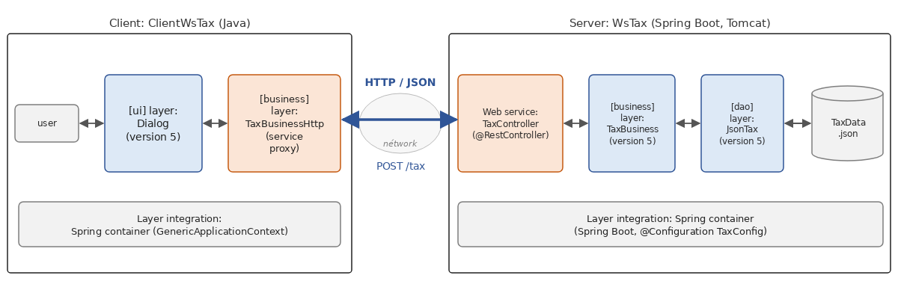
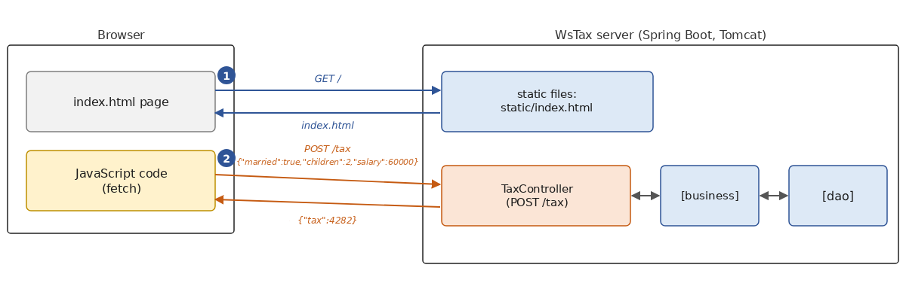
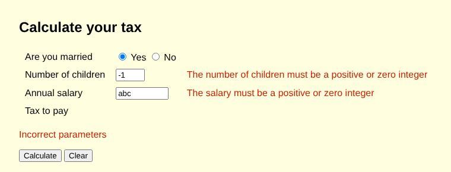

13. Web 服务
先决条件：本章末尾介绍的 [Tax] 应用程序版本 9 复用了版本 5（第 6 章）的 [tax-dao], [tax-business], and [tax-ui] 模块。在构建或打开你的项目之前，必须已使用在 [mvn install] 文件夹中输入的 [06-architectures/TaxV5] 命令将版本 5 安装到本地 Maven 仓库中（参见第 6 章中关于 [mvn install] 的一节）。
13.1. 引言
在上一章中，我们介绍了几个 TCP/IP 客户端/服务器应用程序。由于客户端和服务器交换的是文本行，它们可以用任何语言编写。客户端只需要知道服务器所期望的通信协议即可。
Web 服务也是服务器应用程序（TCP/IP）。它们具有以下特点：
- 它们由 Web 服务器承载，客户端与服务器之间的交换协议是 HTTP（超文本传输协议，HyperText Transfer Protocol），这是一个构建在 TCP/IP 之上的协议，我们在上一章中已经探讨过；
- 无论提供的是什么服务，Web 服务都有标准的通信协议。一个 Web 服务提供多种服务：S1、S2……Sn。每个服务都期望客户端提供参数，并向客户端返回结果。对于每个服务，客户端需要知道：
- 如何指定服务 Si；
- 要提供的参数列表及其类型；
- 服务返回的结果类型。一旦知道了这些要素，无论查询的是哪个 Web 服务，客户端与服务器的对话都遵循相同的格式。因此客户端代码是标准化的；
- 为了防范来自 Internet 的攻击，许多组织只对外开放其服务器上的某些端口：Web 服务主要是 80（HTTP）和 443（HTTPS）端口。所有其他端口都被锁定。因此，诸如上一章所述的客户端/服务器应用程序通常仅限于组织的专用网络（内部网）。把服务托管在 Web 服务器上，则整个 Internet 社区都可以访问它；
- Web 服务可以看作一个远程对象：它提供的服务于是成为该对象的方法。客户端可以通过一个称为代理的中间对象，像使用本地对象一样使用这个远程对象，代理隐藏了所有网络通信。这使我们能够构建与这一层无关的客户端：如果这一层发生变化，客户端的其余部分无需修改；
- 与上一章的 TCP/IP 客户端/服务器应用程序一样，客户端和服务器可以用任何编程语言编写。它们交换由两部分组成的文本行：HTTP 协议所要求的头，以及消息正文，其格式由客户端和服务器双方约定。
基于 Web 服务的客户端/服务器应用程序的架构如下：

这是对第 6 章分层架构的扩展，并增加了专门的网络通信层：客户端的 Web 服务客户端和服务器端的 Web 服务本身。我们在上一章的 TCP 税款计算服务器（版本 8）中已经遇到过类似的架构。
13.1.1. 过去：SOAP 和 WSDL
在 2000 年代，Web 服务最常遵循 SOAP 标准（简单对象访问协议，Simple Object Access Protocol）。客户端发送一个 POST 的 HTTP 请求，其正文是一个 XML 文档：一个包含被调用方法名称及其参数的“信封”。服务器以另一个 XML 信封作出响应，其中包含结果。每个服务都由一个 WSDL 格式（Web 服务描述语言，Web Services Description Language）的 XML 文档来描述，该文档位于服务的 URL 后加 [?wsdl] 处：它列出了方法、参数及其类型。基于这个文档，工具可自动生成服务代理。
在 Java 中，这些服务使用 JAX-WS API 编写：一个用 [@WebService] 注解的类，其公共方法（可以用 [@WebMethod] 注解）成为服务的方法；[wsimport] 工具根据 WSDL 生成客户端代理。从 Java 6 到 Java 10，JAX-WS 是 JDK 的一部分；它在 Java 11 中被移除（JEP 320），现在存在于 JDK 之外，名为 Jakarta XML Web Services。在遗留应用程序中仍能见到它，但新的服务很少再使用它。被逐步淘汰的原因包括 XML 和 SOAP 信封的繁琐、相关标准（WS-Security、WS-Addressing 等）的复杂，以及难以从浏览器调用这些服务。
13.1.2. 现在：REST 和 JSON
当前大多数 Web 服务遵循 REST 风格（表述性状态转移，REpresentational State Transfer），并交换 JSON 文档（JavaScript 对象表示法，JavaScript Object Notation，已在第 5 章介绍）。REST 风格基于以下原则：
- 服务公开 资源，每个资源由一个 URL 指定：[/tax]、[/clients/12]、[/clients/12/orders]；
- 这些资源通过 HTTP 协议的 方法 （也称为动词）来访问，每个方法都有特定的含义；
- 操作的结果由响应中的 HTTP 状态码 指示；
- 请求和响应的正文通常是 JSON 文档，它比 XML 更紧凑、更简单；
- 服务是 无状态的：每个请求都包含处理它所需的全部信息；服务器不会为某个客户端在请求之间保存任何信息。
最常用的 HTTP 方法如下：
方法 | 用途 | 示例 |
GET | 读取资源；任何参数都在 URL 中 | GET /clients/12 |
POST | 创建资源或请求处理；数据在请求正文中 | POST /clients |
PUT | 替换资源 | PUT /clients/12 |
PATCH | 修改资源的一部分 | PATCH /clients/12 |
DELETE | 删除资源 | DELETE /clients/12 |
上一章介绍过的状态码在这里才体现出其全部含义：
状态码 | 含义 |
200 OK | 请求成功；响应正文包含结果 |
201 Created | 资源已创建；[Location] 头提供其 URL |
204 No Content | 请求成功；响应没有正文 |
400 Bad Request | 请求无效（缺少参数或参数无效等） |
404 Not Found | 所请求的资源不存在 |
415 Unsupported Media Type | 所发送文档的类型（头 [Content-Type]）不被接受 |
500 Internal Server Error | 服务器上发生了意外错误 |
REST 服务没有 WSDL 那样必需的对应物。不过，通常的做法是用 OpenAPI 文档（以前称为 Swagger）来描述它，格式为 JSON 或 YAML，工具可以据此生成文档、测试页面和客户端。我们稍后会回到这个话题。
最后，请注意 gRPC，由 Google 设计：服务的方法及其消息在 [.proto] 文件中描述，工具据此生成服务器和客户端，就像 WSDL 时代那样；消息以紧凑的二进制格式（Protocol Buffers）编码，并通过 HTTP/2 传输。gRPC 非常高效，在同一组织内部的服务之间通信时很受欢迎，但不太适合浏览器。在 Java 中可通过 [grpc-java] 库使用它，我们不会用到这个库。
13.1.3. Spring Boot 和 Spring MVC
为了编写我们的 Web 服务，我们将使用 Spring Boot。在第 6 章中，我们使用了 Spring Framework 的依赖注入容器。该框架还包含一个 Web 模块 Spring MVC，它通过注解将 URL 和 HTTP 方法映射到 Java 方法：类上的 [@RestController] ，方法上的 [@GetMapping]、[@PostMapping]……Spring Boot（2014 年发布 1.0 版，2025 年 11 月发布 4 版，搭配 Spring Framework 7）简化了 Spring 的实现：
- 它根据可用的库 自动配置 应用程序：如果存在 Spring MVC 和 Jackson，它会设置 JSON Web 服务所需的一切，无需一行配置；
- 它将 Web 服务器 嵌入 应用程序中：Tomcat 服务器（版本 11）只是一个由主程序启动的库。因此，无需安装单独的 Web 服务器或应用服务器（Tomcat、GlassFish、WildFly……），而过去应用程序是以 [.war] 归档文件的形式部署在这些服务器上的；
- 它提供 启动器（starter）——把特定用例所需的一切打包在一起的 Maven 依赖。[spring-boot-starter-webmvc] 启动器包含 Spring MVC、Tomcat、Jackson 3（第 5 章）以及日志（SLF4J 和 Logback）；
- 它提供一个 Maven 父项目 [spring-boot-starter-parent]，它指定了所有这些相互兼容的库的版本；还提供一个 Maven 插件 [spring-boot-maven-plugin]，它启动应用程序（[mvn spring-boot:run]）并将其打包为单个可执行文件 [.jar]。
Spring Boot 并不是唯一的解决方案：Jakarta EE（以前称为 Java EE）定义了标准 API JAX-RS（Jakarta RESTful Web Services），Quarkus、Micronaut 和 Helidon 等框架也被广泛使用。不过，Spring Boot 是最普及的，而且它自然地建立在我们第 6 章所讲内容的基础之上。
13.2. 第一个 Web 服务
我们将构建第一个客户端/服务器应用程序，其简化架构如下：

本章的项目都是 Maven 项目，归入 [13-web-services] 文件夹：
| 13-web-services/
pom.xml aggregation project of the six Maven projects
WsHello/ "Hello" web service
pom.xml
src/main/java/wshello/WsHelloApplication.java
src/main/java/wshello/HelloController.java
src/main/resources/application.properties
ClientWsHello/ its console client
pom.xml
src/main/java/clientwshello/Main.java
WsOperations/ web service of the four operations
pom.xml
src/main/java/wsoperations/WsOperationsApplication.java
src/main/java/wsoperations/OperationsController.java
src/main/resources/application.properties
ClientWsOperations/ its console client
pom.xml
src/main/java/clientwsoperations/Main.java
WsTax/ tax calculation web service (version 9)
pom.xml
TaxData.json
src/main/java/tax/ws/...
src/main/resources/application.properties
src/main/resources/static/index.html the web client
ClientWsTax/ its console client (version 9)
pom.xml
src/main/java/tax/client/TaxBusinessHttp.java
src/main/java/tax/client/Main.java
ClientNode/ a JavaScript client
client-tax.mjs
|
这些项目已在课程材料中准备好：读者只需在其 IDE（IntelliJ、IDEA 或 VS Code）中打开 [13-web-services] 文件夹，或进入某个项目文件夹并输入指定的 Maven 命令。服务使用 [mvn spring-boot:run] 启动，控制台客户端使用 [mvn compile exec:java] 启动。位于该文件夹根目录的 [pom.xml] 文件不是父项目：它只是在 [<modules>] 标签中列出这六个项目，这样你就可以一次性构建它们（在 [mvn compile] 文件夹中输入 [13-web-services]）。
要自己创建 Spring Boot 项目，最简单的方法是使用 Spring Initializr 网站：在那里选择 Maven、Java、Spring Boot 版本、项目名称及其依赖（这里是“Spring Web”），然后下载一个包含现成项目的 ZIP 文件：[pom.xml] 文件、主类和 [application.properties] 文件。IntelliJ、IDEA 和 VS Code（使用“Spring Boot Extension Pack”扩展）提供相同的向导。
13.2.1. 服务器端

项目 [pom.xml] 的文件 [WsHello] 如下：
| <?xml version="1.0" encoding="UTF-8"?>
<!-- WsHello Web 服务：一个 Spring Boot 应用程序 -->
<project xmlns="http://maven.apache.org/POM/4.0.0"
xmlns:xsi="http://www.w3.org/2001/XMLSchema-instance"
xsi:schemaLocation="http://maven.apache.org/POM/4.0.0 https://maven.apache.org/xsd/maven-4.0.0.xsd">
<modelVersion>4.0.0</modelVersion>
<!-- Spring Boot 父项目：库版本和插件配置 -->
<parent>
<groupId>org.springframework.boot</groupId>
<artifactId>spring-boot-starter-parent</artifactId>
<version>4.1.1</version>
<relativePath/>
</parent>
<groupId>examples.webservices</groupId>
<artifactId>ws-hello</artifactId>
<version>1.0</version>
<properties>
<java.version>25</java.version>
<maven.compiler.release>25</maven.compiler.release>
<project.build.sourceEncoding>UTF-8</project.build.sourceEncoding>
</properties>
<dependencies>
<!-- Spring MVC、嵌入式 Tomcat 服务器和 Jackson -->
<dependency>
<groupId>org.springframework.boot</groupId>
<artifactId>spring-boot-starter-webmvc</artifactId>
</dependency>
</dependencies>
<build>
<plugins>
<plugin>
<groupId>org.apache.maven.plugins</groupId>
<artifactId>maven-compiler-plugin</artifactId>
<version>3.15.0</version>
<configuration>
<parameters>true</parameters>
<compilerArgs>
<arg>-Xlint:all</arg>
</compilerArgs>
</configuration>
</plugin>
<!-- mvn spring-boot:run 启动应用程序；mvn package 为其生成可执行 jar -->
<plugin>
<groupId>org.springframework.boot</groupId>
<artifactId>spring-boot-maven-plugin</artifactId>
</plugin>
</plugins>
</build>
</project>
|
说明：
- 第 9–14 行：项目 继承 自 Spring Boot 父项目 [spring-boot-starter-parent]，该父项目作为依赖从 Maven Central 下载（空标签 [<relativePath/>] 表示不要在上级文件夹中查找它）。这个父项目指定了数百个库的版本，并配置了 Maven 插件。这就是第 28–31 行和第 48–51 行的依赖和插件没有 [<version>] 标签的原因：它们的版本由 Spring Boot 4.1.1 选定；
- 第 21 行：[java.version] 属性是父项目用来配置编译器的属性；第 22 行重复了它，以便与课程中的其他项目保持一致；
- 第 28–31 行：项目唯一的依赖是 Web 启动器。它提供 Spring MVC（Spring Framework 7.0）、嵌入式 Tomcat 11 服务器、Jackson 3 和日志；
- 第 41 行：编译器选项 [-parameters]，它在 [.class] 文件中保留方法参数的名称。Spring 需要它来将方法参数（[name]）映射到 URL 中同名的参数。父项目已启用此选项；我们在这里写出它是为了让它可见；
- 第 48–51 行：Spring Boot 插件。[mvn spring-boot:run] 编译并运行应用程序；[mvn package] 创建一个包含应用程序及其所有依赖的 [target/ws-hello-1.0.jar] 文件，随后用 [java -jar target/ws-hello-1.0.jar] 运行它。
主类如下：
| package wshello;
import org.springframework.boot.SpringApplication;
import org.springframework.boot.autoconfigure.SpringBootApplication;
// WsHello Spring Boot 应用程序
@SpringBootApplication
public class WsHelloApplication {
public static void main(String[] args) {
// 启动 Spring，然后启动等待请求的 Tomcat 服务器
SpringApplication.run(WsHelloApplication.class, args);
}
}
|
- 第 7 行：注解 [@SpringBootApplication] 组合了三个注解：[@Configuration] （该类可以定义 bean，如第 6 章所述）、[@EnableAutoConfiguration] （根据 可用的库自动配置）以及 [@ComponentScan] （Spring 在该类所在的包及其子包中搜索带注解的类，如控制器、配置类等）；
- 第 10 行：这里我们保留了 [main] 和 [public static] 方法的标准形式，Spring Boot 工具正是据此查找主类的；
- 第 12 行：[SpringApplication.run] 读取配置（[application.properties] 文件、环境变量、命令行参数），创建 Spring 容器及其 bean，启动 Tomcat 服务器，然后交还控制权。不过，程序并不会就此停止：Tomcat 线程会等待请求，直到应用程序被终止（Ctrl-C）。
应用程序配置存放在文件 [src/main/resources/application.properties] 中：
| # 应用程序的名称
spring.application.name=WsHello
# Tomcat 服务器的监听端口
server.port=5100
# 启动时不显示横幅
spring.main.banner-mode=off
# 更短的日志消息：时间、级别、线程、类、消息
logging.pattern.console=%d{HH:mm:ss.SSS} %-5level [%thread] %logger{0} : %msg%n
|
- 第 2 行：应用程序名称；
- 第 4 行：服务器监听 5100 端口（默认为 8080）。这个值也可以作为参数传入：[mvn spring-boot:run -Dspring-boot.run.arguments=--server.port=5100]，或通过环境变量 [SERVER_PORT] 传入；
- 第 6 行：默认情况下，Spring Boot 在启动时会显示一个带有 ASCII 文本的大横幅；我们把它去掉；
- 第 8 行：日志消息的格式。默认格式非常全面（日期、级别、进程 ID、应用程序名称、线程、完整类名、消息），但会产生很长的行。我们把它精简为时间、消息级别、线程名称、发出消息的类的短名称（[%logger{0}]）和消息。
Web 服务本身是类 [HelloController]。它提供一个返回字符串 [Hello Mrs xx] 的方法，其中 xx 是收到的名字：
| package wshello;
import org.springframework.web.bind.annotation.GetMapping;
import org.springframework.web.bind.annotation.PathVariable;
import org.springframework.web.bind.annotation.RestController;
// WsHello Web 服务：每个带注解的公共方法处理一个 URL
@RestController
public class HelloController {
// 站点的根：一段欢迎文本
@GetMapping("/")
public String home() {
return "WsHello web service: try /hello/{name} or /greeting/{name}";
}
// 一个变成了 URL 的“Web 方法”：它向女士问好
// URL 的 {name} 段被传递给方法的 [name] 参数
// 字符串原样返回（text/plain）
@GetMapping("/hello/{name}")
public String hello(@PathVariable String name) {
return "Hello Mrs " + name;
}
// 同样的事情，但返回 JSON 响应：对象被序列化为 JSON（application/json）
@GetMapping("/greeting/{name}")
public Greeting greeting(@PathVariable String name) {
return new Greeting(name, "Hello Mrs " + name);
}
// /greeting 方法的结果
public record Greeting(String name, String message) {
}
}
|
说明：
- 第 8 行：注解 [@RestController] 将该类指定为 控制器：Spring 在启动时创建它的单个实例（单例），并将 URL 对应于其某个方法的 HTTP 请求分配给它。每个方法的结果都会原样发送给客户端，放在响应正文中；
- 第 12–15 行：[@GetMapping("/")] 注解将 HTTP 的 GET 方法和 URL 及 [/]（站点根）与方法 [home] 关联起来，该方法返回说明如何使用该服务的文本；
- 第 20–23 行：模板 URL（称为 路由）[/hello/{name}] 包含一个变量 [{name}]：它对应于 [/hello/] 之后的任意 URL 段。因此，URL [/hello/Carla%20Bruni] 会将值 [Carla Bruni] 赋给 [{name}]（代码 [%20] 在 URL 中表示空格）。注解 [@PathVariable] （第 21 行）指示 Spring 把这个值传给同名的方法参数：这就是数据绑定。该方法返回一个字符串：它会原样作为文本文档（类型 [text/plain]）发送给客户端；
- 第 26–29 行：同样的过程，但方法返回的是类型为 [Greeting] 的对象。Spring 使用 Jackson（第 5 章）将其序列化为 JSON ，并作为类型为 [application/json] 的文档发送给客户端。这是 REST Web 服务响应的标准格式；
- 第 32–33 行：结果类型，一个在控制器内声明的记录（第 4 章）。Jackson 知道如何序列化记录：每个组件都会成为同名的 JSON 属性。
服务通过在项目文件夹中输入命令 [mvn spring-boot:run] 来启动。它会显示其日志（课程中将第 2 行的路径缩写为 [...]）：
| > mvn spring-boot:run
18:57:19.455 INFO [main] WsHelloApplication : Starting WsHelloApplication using Java 25.0.4.1 with PID 6430 (... in .../13-web-services/WsHello)
18:57:19.911 INFO [main] WsHelloApplication : No active profile set, falling back to 1 default profile: "default"
18:57:24.871 INFO [main] TomcatWebServer : Tomcat initialized with port 5100 (http)
18:57:24.915 INFO [main] StandardService : Starting service [Tomcat]
18:57:24.915 INFO [main] StandardEngine : Starting Servlet engine: [Apache Tomcat/11.0.24]
18:57:25.041 INFO [main] WebApplicationContextInitializer : Root WebApplicationContext: initialization completed in 4582 ms
18:57:27.317 INFO [main] TomcatWebServer : Tomcat started on port 5100 (http) with context path '/'
18:57:27.394 INFO [main] WsHelloApplication : Started WsHelloApplication in 10.545 seconds (process running for 11.704)
18:57:30.107 INFO [http-nio-5100-exec-1] [/] : Initializing Spring DispatcherServlet 'dispatcherServlet'
18:57:30.108 INFO [http-nio-5100-exec-1] DispatcherServlet : Initializing Servlet 'dispatcherServlet'
18:57:30.113 INFO [http-nio-5100-exec-1] DispatcherServlet : Completed initialization in 5 ms
18:58:33.536 INFO [SpringApplicationShutdownHook] GracefulShutdown : Commencing graceful shutdown. Waiting for active requests to complete
18:58:33.585 INFO [tomcat-shutdown] GracefulShutdown : Graceful shutdown complete
|
- 第 2 行：应用程序启动、Java 版本和执行目录（即项目目录）；
- 第 3 行：Spring 允许你定义 配置文件（profile）（开发、测试、生产等），以启用不同的配置（[application-dev.properties] 文件等）。这里没有激活任何配置文件；
- 第 4–6 行：创建嵌入式 Tomcat 服务器；它将监听 5100 端口；
- 第 7 行：Spring 容器已就绪：它已创建其 bean，包括我们的控制器；
- 第 8–9 行：Tomcat 现在开始接受连接；应用程序已就绪。在我们的测试机器上启动花了大约十秒，这相当慢；通常需要两三秒；
- 第 10–12 行：这些消息出现在第一次请求期间：Spring 的 servlet [DispatcherServlet] 接收所有请求并将其分发给各个控制器方法，它只在这时才被初始化。Servlet 是在 Tomcat 等 Web 服务器中处理请求的 Java 组件（Jakarta Servlet）；Spring 就构建在它之上。线程名称 [http-nio-5100-exec-1] 表明该请求由 Tomcat 服务器的某个线程处理；
- 第 13–14 行：这些消息是在后面几段所述的测试之后，用 Ctrl-C 关闭服务器时出现的；关闭是“优雅的”：Tomcat 在关闭之前会先完成所有待处理的请求。
每条日志消息都会指明其时间、级别（[TRACE]、[DEBUG]、[INFO]、[WARN]、[ERROR]）、发出它的线程以及发送者类。默认显示 [INFO] 及更高级别的消息；[logging.level.<package>=DEBUG] 属性还会显示给定包的较低级别消息。
13.2.2. 使用 curl 查询服务
服务运行期间，我们在第二个命令窗口中使用上一章介绍的 [curl] 工具来查询它。[-i] 选项在正文之前显示响应头，[-s] （静默）选项则隐藏进度条：
| > curl -s -i http://localhost:5100/hello/Carla%20Bruni
HTTP/1.1 200
Content-Type: text/plain;charset=UTF-8
Content-Length: 21
Date: Sat, 03 Oct 2026 16:57:30 GMT
Hello Mrs Carla Bruni
|
- 第 2 行：请求成功。Tomcat 不发送通常跟在状态码后面的文本（[OK]）：自 HTTP/1.1 起它就是可选的（在 HTTP/2 中已不再存在）；只有状态码才重要；
- 第 3 行：文档是文本（UTF-8）；
- 第 4 行：文档大小，以字节为单位；
- 第 5 行：响应时间，在 HTTP 头中始终以协调世界时（GMT）表示，而服务器日志使用的是本地时间；
- 第 7 行：[hello] 方法的结果。
现在来请求 JSON 版本：
| > curl -s -i http://localhost:5100/greeting/Carla%20Bruni
HTTP/1.1 200
Content-Type: application/json
Content-Length: 56
Date: Sat, 03 Oct 2026 16:57:30 GMT
{"name":"Carla Bruni","message":"Hello Mrs Carla Bruni"}
|
- 第 3 行：文档现在的类型是 [application/json]。无需指定字符集：通过网络交换的 JSON 文档始终以 UTF-8 编码（RFC 8259）；
- 第 7 行：序列化后的对象 [Greeting]。JSON 属性 [name] 和 [message] 对应于记录组件的名称。由于 Java 名称已经是“camelCase”格式，而使用环境是 JavaScript 和 JSON，因此无需转换。
与任何路由都不匹配的 URL 会返回 404 响应：
| > curl -s -i http://localhost:5100/hello
HTTP/1.1 404
Content-Type: application/json
Transfer-Encoding: chunked
Date: Sat, 03 Oct 2026 16:57:31 GMT
{"timestamp":"2026-10-03T16:57:31.003Z","status":404,"error":"Not Found","path":"/hello"}
|
- 第 4 行：文档以分块方式发送，每块之前都带有其大小；服务器在开始发送之前不必计算文档的总大小；
- 第 7 行：由 Spring Boot 生成的错误文档：日期、状态码、其文本以及所请求的路径。出于安全原因，它既不包含任何异常的消息，也不包含调用栈（属性 [server.error.include-message] 和 [server.error.include-stacktrace]，默认禁用）。我们将在下一个服务中看到如何获得标准化的错误文档。
你也可以在浏览器的地址栏中输入 URL [http://localhost:5100/hello/Carla Bruni] ，它将显示收到的文本：通过 GET 查询的 Web 服务可以非常容易地进行测试。
13.2.3. 控制台客户端

可以像上一章那样，用简单的 TCP 客户端来编写服务客户端：只需发送 HTTP 请求并读取响应。不过，我们使用 [java.net.http.HttpClient] 类（Java 11，同样在上一章介绍过），它为我们处理 HTTP 协议，并使用 Jackson 处理 JSON 文档。[ClientWsHello] 项目是一个标准的 Maven 项目，其 [pom.xml] 文件声明了 Jackson 依赖和主类：
| <dependencies>
<!-- Jackson，用于读取 JSON 响应 -->
<dependency>
<groupId>tools.jackson.core</groupId>
<artifactId>jackson-databind</artifactId>
<version>3.1.5</version>
</dependency>
</dependencies>
<build>
<plugins>
<plugin>
<groupId>org.apache.maven.plugins</groupId>
<artifactId>maven-compiler-plugin</artifactId>
<version>3.15.0</version>
<configuration>
<parameters>true</parameters>
<compilerArgs>
<arg>-Xlint:all</arg>
</compilerArgs>
</configuration>
</plugin>
<!-- mvn exec:java 执行主类 -->
<plugin>
<groupId>org.codehaus.mojo</groupId>
<artifactId>exec-maven-plugin</artifactId>
<version>3.5.1</version>
<configuration>
<mainClass>clientwshello.Main</mainClass>
</configuration>
</plugin>
|
其代码如下：
| package clientwshello;
import java.io.IOException;
import java.net.ConnectException;
import java.net.URI;
import java.net.URLEncoder;
import java.net.http.HttpClient;
import java.net.http.HttpRequest;
import java.net.http.HttpResponse;
import java.nio.charset.StandardCharsets;
import tools.jackson.databind.json.JsonMapper;
// WsHello Web 服务的控制台客户端
public class Main {
// 服务的 JSON 响应：组件名称与服务器端相同
record Greeting(String name, String message) {
}
public static void main(String[] args) throws InterruptedException {
// 服务的 URL 可以作为参数传入
URI serviceUrl = URI.create(args.length > 0 ? args[0] : "http://localhost:5100/");
// Jackson JSON <-> 对象转换器
JsonMapper mapper = JsonMapper.builder().build();
// 整个程序运行期间只用一个 HTTP 客户端
try (HttpClient client = HttpClient.newHttpClient()) {
while (true) {
// 女士的名字
String input = IO.readln("Name of the lady (nothing to stop): ");
String name = input == null ? "" : input.strip();
if (name.isEmpty()) {
break;
}
try {
// 名字放在 URL 的路径中：必须在其中编码
String encodedName = URLEncoder.encode(name, StandardCharsets.UTF_8).replace("+", "%20");
// 1 - 文本响应
String text = get(client, serviceUrl.resolve("hello/" + encodedName));
IO.println("[text] " + text);
// 2 - JSON 响应，反序列化为 Greeting 对象
String json = get(client, serviceUrl.resolve("greeting/" + encodedName));
Greeting greeting = mapper.readValue(json, Greeting.class);
IO.println("[JSON] " + greeting);
} catch (ConnectException e) {
// 该地址没有服务在监听（异常没有消息）
IO.println("Error: ConnectException: connection refused (" + serviceUrl + ")");
} catch (IOException e) {
// 服务返回了错误响应，或者通信失败
IO.println("Error: " + e.getClass().getSimpleName() + " : " + e.getMessage());
}
}
}
}
// 一个 GET 请求，其响应体以字符串形式返回
private static String get(HttpClient client, URI url) throws IOException, InterruptedException {
HttpRequest request = HttpRequest.newBuilder(url).GET().build();
HttpResponse<String> response = client.send(request, HttpResponse.BodyHandlers.ofString());
// 2xx 以外的状态码是错误
if (response.statusCode() / 100 != 2) {
throw new IOException("the service responded " + response.statusCode() + " for " + url);
}
return response.body();
}
}
|
说明：
- 第 16–18 行：服务的 JSON 响应将被反序列化为一个 [Greeting] 对象。客户端无法访问服务器的 [Greeting] 类型；它声明了自己的类型，组件名称相同。客户端不共享服务器的代码，只共享所交换文档的格式；
- 第 22 行：服务的 URL 作为参数传入，缺省时默认为 [http://localhost:5100/]：如果服务的地址发生变化，客户端无需重新编译；
- 第 24 行：Jackson 3 的 JSON 转换器（第 5 章）；
- 第 27 行：整个程序只用一个 [HttpClient] 。它管理一组可复用的连接，必须共享，而不是为每个请求重新创建。从 Java 21 开始，[HttpClient] 实现了 [AutoCloseable]：带资源的 [try] 语句会在程序结束时关闭它；
- 第 37 行：输入的名字成为 URL 的一段：其中不允许的字符必须编码。[URLEncoder.encode] 将“é”编码为 [%C3%A9]，但它是为表单参数设计的，其中空格被编码为 [+]。在 URL 路径中，空格必须编码为 [%20]：因此我们替换 [+] （有效的 [+] 输入会被编码为 [%2B] ，不受影响）；
- 第 39 行：[resolve] 方法（属于 [URI] 类）根据基础 URL 和相对 URL 构造一个 URL。注意：基础 URL 必须以 [/] 结尾，[hello/...] 才能追加到它后面；
- 第 42–43 行：使用 Jackson 的 [readValue] 方法将 JSON 响应反序列化为一个 [Greeting] 对象；
- 第 45–47 行：当无法连接到服务时（例如在指定地址没有任何服务在监听），会抛出异常 [ConnectException] 。它没有消息；我们自己构造一条。这个 [catch] 必须放在第 48 行的 catch 之前，因为 [ConnectException] 派生自 [IOException]；
- 第 48–50 行：其他通信错误以及服务返回的错误响应（见第 62 行）；
- 第 57–65 行：一个 GET 请求，其响应正文以字符串形式给出；
- 第 58 行：使用构建器构建请求：URL、HTTP 方法，然后是 [build]；
- 第 59 行：[send] 方法发送请求并等待响应。它的第二个参数 [BodyHandler] 指定如何处理响应正文：[ofString] 将整个正文读入一个字符串，并按 [Content-Type] 头所指定的字符集进行解码（默认为 UTF-8）。发生通信错误时，[send] 会触发 [IOException] ，如果线程在等待期间被中断，则触发 [InterruptedException] ；主程序让后者向上传播（第 20 行）；
- 第 61–63 行：与其他库不同，[HttpClient] 不会把错误状态码（4xx、5xx）当作异常：响应会正常返回，由我们自己检查其状态码。在这里，对于 2xx 以外的任何状态码，我们都会抛出一个 [IOException] 。
服务运行时的结果：
| > mvn -q compile exec:java
Name of the lady (nothing to stop): Carla Bruni
[text] Hello Mrs Carla Bruni
[JSON] Greeting[name=Carla Bruni, message=Hello Mrs Carla Bruni]
Name of the lady (nothing to stop): Marie Curie
[text] Hello Mrs Marie Curie
[JSON] Greeting[name=Marie Curie, message=Hello Mrs Marie Curie]
Name of the lady (nothing to stop):
|
第 4 行显示收到的 [Greeting] 对象，采用为记录生成的 [toString] 方法的格式。Maven 选项 [-q] （安静）会隐藏 Maven 自己的消息。如果指定的地址上没有任何服务在监听，连接会被拒绝：
| > mvn -q compile exec:java -Dexec.args="http://localhost:5199/"
Name of the lady (nothing to stop): Carla Bruni
Error: ConnectException: connection refused (http://localhost:5199/)
Name of the lady (nothing to stop):
|
如果服务的 URL 不正确，服务会返回 404：
| > mvn -q compile exec:java -Dexec.args="http://localhost:5100/hello/"
Name of the lady (nothing to stop): Carla Bruni
Error: IOException : the service responded 404 for http://localhost:5100/hello/hello/Carla%20Bruni
Name of the lady (nothing to stop):
|
对于 SOAP 服务，客户端使用根据服务的 WSDL 生成的代理，像调用本地方法一样调用远程方法。而在这里，我们是直接调用服务的 URL。我们将为税款计算服务编写一个像样的代理。
13.2.4. 服务描述：OpenAPI
WSDL 以标准化格式描述 SOAP 服务。它如今的对应物是 OpenAPI 文档。对于 Spring Boot，[springdoc-openapi] 库（[org.springdoc:springdoc-openapi-starter-webmvc-ui] 依赖）无需一行代码就能生成它：它在启动时扫描控制器及其注解，并将文档发布到 URL [/v3/api-docs]，同时还发布一个交互式测试页面 Swagger UI，位于 URL [/swagger-ui.html]。该文档描述每个路由：其 URL、HTTP 方法、参数及其类型，以及其响应的 JSON 模式。OpenAPI Generator 等生成器利用它来生成各种语言的带类型客户端，就像 [wsimport] 对 WSDL 所做的那样。这个库不属于 Spring Boot，本章不会使用它。
13.3. 用于算术运算的 Web 服务
上一个服务只提供一个方法。我们现在来看一个提供四则算术运算的 Web 服务：add(a, b)、subtract(a, b)、multiply(a, b) 和 divide(a, b)。我们将借此机会探讨向 Web 服务传递参数的两种方式以及如何处理错误。
13.3.1. 服务器端
[WsOperations] 服务接受两种类型的请求：
请求 | 参数 |
GET /add?a=1.5&b=2 | 运算位于 URL 路径中，数字位于其查询字符串中 |
POST /calculation | 请求正文中的一个 JSON 文档：[{"operation":"add","a":1.5,"b":2}] |
在这两种情况下，响应都是一个 JSON 文档：[{"operation":"add","a":1.5,"b":2.0,"result":3.5}]。GET 适用于不修改服务器上任何内容的简单请求：URL 可以在浏览器中输入、加入书签，其响应也可以被缓存。POST 适用于大型或结构化的数据。该项目的 [pom.xml] 文件与 [WsHello] 的相同，只是项目名称（[ws-operations]）不同，其主类 [WsOperationsApplication] 与 [WsHello] 的主类相同。它的 [application.properties] 文件如下：
| # 应用程序的名称
spring.application.name=WsOperations
# Tomcat 服务器的监听端口
server.port=5110
# Spring MVC 检测到的错误以“Problem Details”格式（RFC 9457）报告
spring.mvc.problemdetails.enabled=true
# 启动时不显示横幅
spring.main.banner-mode=off
# 更短的日志消息：时间、级别、线程、类、消息
logging.pattern.console=%d{HH:mm:ss.SSS} %-5level [%thread] %logger{0} : %msg%n
|
- 第 4 行：服务监听 5110 端口；
- 第 6 行：由 Spring MVC 自身检测到的错误（未知 URL、无效的 JSON 文档、不受支持的文档类型等）将通过 Problem Details 格式的响应来报告。这种格式由 RFC 9457 标准化，是一个类型为 [application/problem+json] 的 JSON 文档，用于描述错误：其类型、标题、状态码、详细信息以及任何附加信息。这是 REST 服务指明出了什么问题的标准方式。
验证器如下：
| package wsoperations;
import java.util.LinkedHashMap;
import java.util.List;
import java.util.Locale;
import java.util.Map;
import java.util.function.DoubleBinaryOperator;
import org.springframework.http.HttpStatus;
import org.springframework.http.ProblemDetail;
import org.springframework.http.ResponseEntity;
import org.springframework.web.bind.annotation.GetMapping;
import org.springframework.web.bind.annotation.PathVariable;
import org.springframework.web.bind.annotation.PostMapping;
import org.springframework.web.bind.annotation.RequestBody;
import org.springframework.web.bind.annotation.RequestParam;
import org.springframework.web.bind.annotation.RestController;
// WsOperations Web 服务：四则运算
@RestController
public class OperationsController {
// GET /add?a=1.5&b=2（subtract、multiply、divide 同理）
// [operation] 来自 URL 的路径，[a] 和 [b] 来自其查询字符串
@GetMapping("/{operation}")
public ResponseEntity<?> calculateGet(@PathVariable String operation,
@RequestParam(required = false) String a, @RequestParam(required = false) String b) {
return calculate(operation, readNumber(a), readNumber(b));
}
// POST /calculation，带 JSON 请求体：{"operation":"add","a":1.5,"b":2}
// JSON 请求体被反序列化为 [request] 参数
@PostMapping("/calculation")
public ResponseEntity<?> calculatePost(@RequestBody CalculationRequest request) {
return calculate(request.operation(), request.a(), request.b());
}
// 以小数点书写的数字，如果缺失或不正确则为 null
private static Double readNumber(String text) {
if (text == null) {
return null;
}
try {
double number = Double.parseDouble(text);
// NaN 和无穷大被拒绝
return Double.isFinite(number) ? number : null;
} catch (NumberFormatException e) {
return null;
}
}
// 两种 HTTP 方法共用的计算
private static ResponseEntity<?> calculate(String operation, Double a, Double b) {
// 所请求的运算，如果未知则为 null
String name = operation == null ? "" : operation.toLowerCase(Locale.ROOT);
DoubleBinaryOperator calculation = switch (name) {
case "add" -> (x, y) -> x + y;
case "subtract" -> (x, y) -> x - y;
case "multiply" -> (x, y) -> x * y;
case "divide" -> (x, y) -> x / y;
default -> null;
};
// 检查参数：错误被累积起来
Map<String, List<String>> errors = new LinkedHashMap<>();
if (calculation == null) {
errors.put("operation", List.of("Unknown operation [" + name
+ "]: use add, subtract, multiply or divide"));
}
if (a == null) {
errors.put("a", List.of("The number a is missing or incorrect"));
}
if (b == null) {
errors.put("b", List.of("The number b is missing or incorrect"));
}
if (!errors.isEmpty()) {
// 400 响应，带错误列表
ProblemDetail problem = ProblemDetail.forStatus(HttpStatus.BAD_REQUEST);
problem.setTitle("Incorrect parameters");
problem.setProperty("errors", errors);
return ResponseEntity.badRequest().body(problem);
}
// 除以零被拒绝：400 响应
if (name.equals("divide") && b == 0) {
ProblemDetail problem = ProblemDetail.forStatusAndDetail(HttpStatus.BAD_REQUEST,
"The number b must be non-zero for a division");
problem.setTitle("Division by zero");
return ResponseEntity.badRequest().body(problem);
}
// 200 响应，结果为 JSON
return ResponseEntity.ok(new CalculationResult(name, a, b, calculation.applyAsDouble(a, b)));
}
// 计算请求（POST 请求的请求体）：JSON 中缺失的数字为 null
public record CalculationRequest(String operation, Double a, Double b) {
}
// 计算结果（响应体）
public record CalculationResult(String operation, double a, double b, double result) {
}
}
|
说明：
- 第 24–28 行：GET 请求。方法的 [operation] 参数与路由变量 [{operation}] （[@PathVariable]）相关联。用 [a] 和 [b] 表示、并用 [@RequestParam] 注解的参数，被绑定到查询字符串（[?a=1.5&b=2]）中的同名参数。它们是可选的（[required = false]）：缺失的参数被视为 [null]；否则，Spring 会以 400 响应拒绝缺少其中任何一个参数的请求；
- 第 26 行：[a] 和 [b] 被声明为 [String] 类型。我们本可以把它们声明为 [double] 或 [Double] 类型：那样 Spring 会自己进行转换，并以包含通用错误消息的 400 响应拒绝不正确的值。以字符串形式接收它们，我们就保留了对错误消息的控制；
- 第 32–35 行：POST 请求。用 [request] 表示、并用 [@RequestBody] 注解的参数，由 Jackson 根据 JSON 请求正文构造。它的组件是 [Double] 类型（第 93 行），而不是 [double]：这样，JSON 文档中缺失的属性会被计算为 [null]，从而可以被检测到；
- 第 38–49 行：将字符串转换为数字；如果失败，结果为 [null]。在 URL 和 JSON 中，数字都使用小数点书写：因此与系统语言无关的 [Double.parseDouble] 才是正确的工具（而不是 [NumberFormat]，它在法语服务器上会期望使用逗号，见第 5 章）。它还接受文本 [NaN] 和 [Infinity]，我们会拒绝它们（第 45 行）；
- 第 54 行：运算名称，转为小写。[Locale.ROOT] 使转换与系统语言无关；
- 第 55–61 行：所请求的运算由一个函数式接口（第 7 章）[DoubleBinaryOperator] 表示，其方法 [applyAsDouble(double, double)] 返回一个 [double]。[switch] 表达式选择与该运算对应的 lambda；对于未知运算，它选择 [null]；
- 第 63–73 行：三个参数通过将错误累积到一个字典中来进行验证，该字典将每个参数与其错误消息列表相关联。[LinkedHashMap] 保持插入顺序；
- 第 74–80 行：如果发现错误，则返回 400 响应。Spring 类 [ProblemDetail] 表示一个“Problem Details”文档：[forStatus] 使用状态码创建它，[setTitle] 设置其标题，[setProperty] 向其添加一个属性，这里是 [errors]，即错误列表。[ResponseEntity] 类表示完整的 HTTP 响应：状态码、头和正文。[ResponseEntity.badRequest()] 准备一个 400 响应，[body] 提供其正文；
- 第 82–87 行：除以零会被 400 响应拒绝，这次其文档中包含一个详细信息（[forStatusAndDetail]）。这种拒绝是必要的：在 Java 中，将 [double] 除以零不会抛出异常，而是返回无穷大（[Double.POSITIVE_INFINITY]），而 JSON 文档无法表示它（Jackson 会把它写成字符串 ["Infinity"]）。[b == 0] 测试将 [Double] 对象的值与零比较：Java 会自动对其“拆箱”；
- 第 89 行：200 响应，其正文是序列化为 JSON 的 [CalculationResult] 对象；
- 第 93–98 行：与客户端交换的两种类型。这些对象仅用于在两个应用程序之间传输数据，被称为 DTO （数据传输对象，Data Transfer Object）。记录非常适合这一用途。
控制器的两个方法都返回类型 [ResponseEntity<?>]：这是一个正文可以是任意类型的响应，这里是 [CalculationResult] 或 [ProblemDetail]。Spring 检查正文的实际类型来对其序列化；它为文档指定类型 [application/json]，对于 [ProblemDetail] 则指定 [application/problem+json]。
13.3.2. 使用 curl 测试
服务通过在 [mvn spring-boot:run] 文件夹中运行 [WsOperations] 来启动。一次加法：
| > curl -s -i "http://localhost:5110/add?a=1.5&b=2"
HTTP/1.1 200
Content-Type: application/json
Transfer-Encoding: chunked
Date: Sat, 03 Oct 2026 16:59:40 GMT
{"operation":"add","a":1.5,"b":2.0,"result":3.5}
|
数字 2 变成了 2.0：Jackson 总是把 [double] 连同其小数部分一起写出。对于客户端（尤其是 JavaScript）来说，这是同一个数字。一次除以零：
| > curl -s -i "http://localhost:5110/divide?a=1&b=0"
HTTP/1.1 400
Content-Type: application/problem+json
Transfer-Encoding: chunked
Date: Sat, 03 Oct 2026 16:59:40 GMT
Connection: close
{"detail":"The number b must be non-zero for a division","instance":"/divide","status":400,"title":"Division by zero"}
|
- 第 2 行：请求被拒绝；
- 第 3 行：正文是一个“Problem Details”文档；
- 第 6 行：在 400 响应之后，Tomcat 出于预防会关闭连接：无效的请求可能在连接中留下了意外的数据。客户端将为其下一个请求打开另一个连接；
- 第 8 行：文档包含由我们的代码设置的属性 [title]、[status] 和 [detail]，以及由 Spring 添加的 [instance]：即引发错误的请求的路径。属性 [type]（一个用于记录错误类型的 URL）缺失：RFC 9457 此时赋予它值 [about:blank]，这意味着仅凭状态码就足以描述该问题。请注意，属性是按字母顺序排序的：这是 Jackson 3 对 [ProblemDetail] 这类普通类的默认行为；而记录则保留其组件的顺序。
一个未知的运算、一个用小数逗号书写的数字，以及一个缺失的数字：
| > curl -s -i "http://localhost:5110/power?a=1,5"
HTTP/1.1 400
Content-Type: application/problem+json
Transfer-Encoding: chunked
Date: Sat, 03 Oct 2026 16:59:40 GMT
Connection: close
{"instance":"/power","status":400,"title":"Incorrect parameters","errors":{"operation":["Unknown operation [power]: use add, subtract, multiply or divide"],"a":["The number a is missing or incorrect"],"b":["The number b is missing or incorrect"]}}
|
文档的 [errors] 属性按参数逐个包含验证错误；它由 [setProperty] 添加，位于规范化属性之后。现在来看一个 POST 查询。[-d] 选项（属于 [curl] ）将其后的文本放在 POST 请求的正文中发送，[-H] 选项则向请求添加一个头，这里是所发送文档的类型：
| > curl -s -i -H "Content-Type: application/json" -d '{"operation":"multiply","a":1.5,"b":-4}' http://localhost:5110/calculation
HTTP/1.1 200
Content-Type: application/json
Transfer-Encoding: chunked
Date: Sat, 03 Oct 2026 16:59:41 GMT
{"operation":"multiply","a":1.5,"b":-4.0,"result":-6.0}
|
如果发送的 JSON 文档无效，Jackson 就无法构造 [request] 参数：Spring 会自行以 400 错误响应，而不执行我们的方法：
| > curl -s -i -H "Content-Type: application/json" -d '{"operation":"multiply","a":1.5,' http://localhost:5110/calculation
HTTP/1.1 400
Content-Type: application/problem+json
Transfer-Encoding: chunked
Date: Sat, 03 Oct 2026 16:59:41 GMT
Connection: close
{"detail":"Failed to read request","instance":"/calculation","status":400,"title":"Bad Request"}
|
第 8 行的“Problem Details”文档是由 Spring MVC 借助属性 [spring.mvc.problemdetails.enabled] 生成的；没有它，我们得到的将是 [WsHello] 中看到的 Spring Boot 错误文档。如果省略 [Content-Type] 头，情况也一样：[curl] 随后会把正文作为 HTML 表单发送，而 Spring 会拒绝这种类型的文档：
| > curl -s -i -d 'x' http://localhost:5110/calculation
HTTP/1.1 415
Accept: application/json, application/*+json
Content-Type: application/problem+json
Transfer-Encoding: chunked
Date: Sat, 03 Oct 2026 16:59:41 GMT
{"detail":"Content-Type 'application/x-www-form-urlencoded;charset=UTF-8' is not supported.","instance":"/calculation","status":415,"title":"Unsupported Media Type"}
|
状态码 415（Unsupported Media Type）表示所发送文档的类型不被接受；第 3 行的 [Accept] 头告诉客户端接受哪些类型。
13.3.3. 客户端
我们的控制台客户端在一行中请求运算和两个数字，然后查询服务两次：先用 GET，再用 POST，以演示这两种方法。它的 [pom.xml] 文件与 [ClientWsHello] 的相同，只是项目名称和主类不同。其程序如下：
| package clientwsoperations;
import java.io.IOException;
import java.net.URI;
import java.net.URLEncoder;
import java.net.http.HttpClient;
import java.net.http.HttpRequest;
import java.net.http.HttpResponse;
import java.net.http.HttpResponse.BodyHandlers;
import java.nio.charset.StandardCharsets;
import java.text.NumberFormat;
import java.text.ParsePosition;
import java.util.List;
import java.util.Map;
import tools.jackson.databind.json.JsonMapper;
// WsOperations Web 服务的控制台客户端
public class Main {
// 与服务交换的对象（组件名称与 JSON 的相同）
record CalculationRequest(String operation, double a, double b) {
}
record CalculationResult(String operation, double a, double b, double result) {
}
// “Problem Details”格式的错误响应
record Problem(String title, String detail, Integer status, Map<String, List<String>> errors) {
}
// 数字按当前区域性输入和显示（fr-FR：小数逗号，en-US：小数点）
private static final NumberFormat FORMAT = NumberFormat.getInstance();
public static void main(String[] args) throws InterruptedException {
URI serviceUrl = URI.create(args.length > 0 ? args[0] : "http://localhost:5110/");
// JSON 转换器；Jackson 3 忽略未知的 JSON 属性（instance……）
JsonMapper mapper = JsonMapper.builder().build();
try (HttpClient client = HttpClient.newHttpClient()) {
while (true) {
// 输入运算和两个数字（小数分隔符取决于当前区域性）
String input = IO.readln("Operation a b (e.g.: add 1.5 2), nothing to stop: ");
String[] fields = input == null ? new String[0] : input.strip().split("\\s+");
if (fields.length == 0 || fields[0].isEmpty()) {
break;
}
if (fields.length != 3) {
IO.println("Three elements are needed: operation a b");
continue;
}
// 在调用服务之前，先在本地检查这两个数字
String operation = fields[0];
Double a = readNumber(fields[1]);
if (a == null) {
IO.println("Incorrect number a...");
}
Double b = readNumber(fields[2]);
if (b == null) {
IO.println("Incorrect number b...");
}
if (a == null || b == null) {
continue;
}
String calculation = operation + "(" + FORMAT.format(a) + " ; " + FORMAT.format(b) + ")";
// 1 - GET 请求：在 URL 中，数字以小数点书写
String url = URLEncoder.encode(operation, StandardCharsets.UTF_8) + "?a=" + a + "&b=" + b;
try {
HttpRequest request = HttpRequest.newBuilder(serviceUrl.resolve(url)).GET().build();
HttpResponse<String> response = client.send(request, BodyHandlers.ofString());
if (response.statusCode() == 200) {
CalculationResult result = mapper.readValue(response.body(), CalculationResult.class);
IO.println("[GET " + url + "] " + calculation
+ " = " + FORMAT.format(result.result()));
} else {
// 失败：原样显示状态码和收到的文档
IO.println("[GET " + url + "] error " + response.statusCode()
+ " : " + response.body());
}
} catch (IOException e) {
// 服务不可达
IO.println("[GET " + url + "] error: " + e);
}
// 2 - POST 请求：请求以 JSON 格式放在请求体中发送
try {
String json = mapper.writeValueAsString(new CalculationRequest(operation, a, b));
HttpRequest request = HttpRequest.newBuilder(serviceUrl.resolve("calculation"))
.header("Content-Type", "application/json")
.POST(HttpRequest.BodyPublishers.ofString(json))
.build();
HttpResponse<String> response = client.send(request, BodyHandlers.ofString());
if (response.statusCode() == 200) {
// 成功：请求体包含结果
CalculationResult result = mapper.readValue(response.body(), CalculationResult.class);
IO.println("[POST calculation] " + calculation + " = " + FORMAT.format(result.result()));
} else {
// 失败：请求体包含问题的描述
Problem problem = mapper.readValue(response.body(), Problem.class);
IO.println("[POST calculation] error " + response.statusCode() + " : " + problem.title());
if (problem.detail() != null) {
IO.println(" " + problem.detail());
}
if (problem.errors() != null) {
problem.errors().forEach((parameter, messages) ->
IO.println(" " + parameter + " : " + String.join(" ; ", messages)));
}
}
} catch (IOException e) {
// 服务不可达
IO.println("[POST calculation] error: " + e);
}
}
}
}
// 按当前区域性输入的数字，如果输入不是数字则为 null
private static Double readNumber(String text) {
ParsePosition position = new ParsePosition(0);
Number number = FORMAT.parse(text, position);
// 输入必须被完整读取："2.5x" 被拒绝
return number == null || position.getIndex() != text.length() ? null : number.doubleValue();
}
}
|
说明：
- 第 20–29 行：客户端的 DTO 文件。它们在这里被再次声明：客户端不共享服务器的代码，只共享所交换 JSON 文档的格式。Spring 的 [ProblemDetail] 类是 Web 框架的一部分；对客户端来说，一个简单的记录就足够了。它的组件是对象类型（[String]、[Integer]、[Map]）：文档中缺失的属性（如 [detail] 或 [errors]）会被设为 [null]；
- 第 32 行：数字按系统语言的格式输入和显示，这里是英语：小数点；
- 第 37 行：从 Jackson 3 起，记录中未知的属性（这里是 [instance]）在反序列化时默认被忽略；
- 第 51–63 行：在调用服务之前，先在本地验证数字。服务必须始终验证其参数（因为它不知道是谁在调用它），但客户端可以避免不必要的网络流量；
- 第 64 行：描述计算的文本，其中的数字采用系统语言的格式；
- 第 67 行：GET 请求的 URL。数字必须使用小数点书写：将 [Double] 拼接到字符串时使用其 [toString] 方法，它与系统语言无关。用户输入的运算则由 [URLEncoder] 编码；
- 第 69–70 行：GET 请求；
- 第 71–74 行：如果成功（状态码 200），JSON 响应会被反序列化为一个 [CalculationResult] 对象；
- 第 75–79 行：如果请求失败，则原样显示状态码和收到的文档；
- 第 80–83 行：异常 [IOException] 表示通信错误，例如无法到达服务；
- 第 87–92 行：POST 请求。[CalculationRequest] 对象由 [writeValueAsString] 序列化为 JSON；请求带有头 [Content-Type]，后面是其正文：[BodyPublishers.ofString] 发送一个以 UTF-8 编码的字符串；
- 第 97–107 行：如果失败，正文是一个“Problem Details”文档，被反序列化为一个 [Problem] 对象，并显示其标题、详细信息和验证错误。[Map] 的 [forEach] 方法接收一个带有两个参数的 lambda：每个元素的键和值（第 7 章）；
- 第 118–123 行：按系统语言格式读取数字。[parse(String, ParsePosition)] 方法（属于 [NumberFormat] ）读取字符串的开头部分，并在 [ParsePosition] 对象中指明它在哪里停止：如果它没有停在末尾，说明输入包含多余字符（[2.5x]）。
服务运行时的结果：
| > mvn -q compile exec:java
Operation a b (e.g.: add 1.5 2), nothing to stop: add 1.5 2
[GET add?a=1.5&b=2.0] add(1.5 ; 2) = 3.5
[POST calculation] add(1.5 ; 2) = 3.5
Operation a b (e.g.: add 1.5 2), nothing to stop: divide 1 0
[GET divide?a=1.0&b=0.0] error 400 : {"detail":"The number b must be non-zero for a division","instance":"/divide","status":400,"title":"Division by zero"}
[POST calculation] error 400 : Division by zero
The number b must be non-zero for a division
Operation a b (e.g.: add 1.5 2), nothing to stop: power 2 3
[GET power?a=2.0&b=3.0] error 400 : {"instance":"/power","status":400,"title":"Incorrect parameters","errors":{"operation":["Unknown operation [power]: use add, subtract, multiply or divide"]}}
[POST calculation] error 400 : Incorrect parameters
operation : Unknown operation [power]: use add, subtract, multiply or divide
Operation a b (e.g.: add 1.5 2), nothing to stop: multiply 2.5 x
Incorrect number b...
Operation a b (e.g.: add 1.5 2), nothing to stop:
|
- 第 3 行：GET 查询的 URL：在那里输入的数字 1.5 和 2 被写成 1.5 和 2.0；
- 第 6–8 行：在两个请求中观察到的同一个错误：GET 请求显示原始文档，POST 请求显示其处理结果；
- 第 10–12 行：服务检测到了未知的运算；
- 第 14 行：不正确的数字由客户端检测到，它没有查询服务。
13.4. 示例应用程序——版本 9：用于计算税款的 Web 服务
我们再来看税款计算应用程序。在上一章（版本 8）中，我们创建了一个名为 TCP 的服务器，可以使用其自有的通信协议进行远程查询。现在我们将把它改造成一个名为 REST 的 Web 服务。
13.4.1. 架构
版本 9 的架构如下：

- 在服务器端，[WsTax] Web 服务接收 HTTP 请求，并交由版本 5（第 6 章）的 [business] 层和 [dao] 层处理，这两层被原样复用；
- 在客户端，版本 5 的 [ui] 层同样被原样复用。它与一种新的 [business] 层 [TaxBusinessHttp] 通信，该层通过查询 Web 服务来实现 [ITaxBusiness] 接口：它充当服务的代理。[ui] 层并不知道计算是在另一台机器上执行的；
- 在两端，各层的集成都由 Spring 的依赖注入容器负责，就像版本 5 中那样。
13.4.2. Web 服务
服务契约如下：
请求 | 成功时的响应 | 出错时的响应 |
GET /tax?married=y&children=2&salary=60000 | 200：[{"tax":4282}] | 400：“Problem Details”文档 |
POST /tax，正文为 [{"married":true,"children":2,"salary":60000}] | 200：[{"tax":4282}] | 400：“Problem Details”文档 |
[WsTax] 项目依赖于版本 5 的 [tax-dao] and [tax-business] 模块。为了让 Maven 找到它们，必须先在该机器的本地 Maven 仓库（用户主目录中的 [.m2/repository] 文件夹）中安装它们，方法是在 [mvn install] 文件夹中输入 [06-architectures/TaxV5] 命令（第 6 章）。[pom.xml] 文件（属于 [WsTax] ）的依赖于是如下（文件的其余部分与 [WsHello] 相同，只是项目名称不同：[examples.tax:ws-tax:9.0]）：
| <dependencies>
<!-- Spring MVC、嵌入式 Tomcat 服务器和 Jackson -->
<dependency>
<groupId>org.springframework.boot</groupId>
<artifactId>spring-boot-starter-webmvc</artifactId>
</dependency>
<!-- 第 5 版的 [dao] 层和 [business] 层，原样复用 -->
<dependency>
<groupId>examples.tax</groupId>
<artifactId>tax-dao</artifactId>
<version>5.0</version>
</dependency>
<dependency>
<groupId>examples.tax</groupId>
<artifactId>tax-business</artifactId>
<version>5.0</version>
</dependency>
</dependencies>
|
- 第 7–17 行：版本 5 的两个模块，由其 Maven 坐标标识。[tax-dao] 模块还包含来自 [TaxBracket] and [TaxException] 类，它们属于 [entities] 层。这些模块依赖于 Jackson 3.1.5，Web 启动器已经提供了它。
配置文件 [application.properties] 如下：
| # 应用程序的名称
spring.application.name=WsTax
# Tomcat 服务器的监听端口
server.port=5120
# Spring MVC 检测到的错误以“Problem Details”格式（RFC 9457）报告
spring.mvc.problemdetails.enabled=true
# 启动时不显示横幅
spring.main.banner-mode=off
# 更短的日志消息：时间、级别、线程、类、消息
logging.pattern.console=%d{HH:mm:ss.SSS} %-5level [%thread] %logger{0} : %msg%n
# [dao] 层：其实现及其数据文件
dao.implementation=JsonTax
dao.file=TaxData.json
|
- 第 4 行：服务监听 5120 端口；
- 第 13–14 行：[dao] 层的配置，格式与版本 5 的 [tax.properties] 文件相同：要使用的实现及其数据文件。这些不是 Spring Boot 的属性，而是我们应用程序特有的属性：[application.properties] 文件可以包含任意多个这样的属性。这里我们使用位于项目文件夹中的 JSON 文件 [TaxData.json]，在使用 [mvn spring-boot:run] 时，项目文件夹也是服务的运行文件夹。
[dao] 层和 [business] 层通过一个配置类集成到 Spring 容器中：
| package tax.ws;
import tax.dao.FileTax;
import tax.dao.HardwiredTax;
import tax.dao.ITaxDao;
import tax.dao.JsonTax;
import tax.entities.TaxException;
import tax.business.ITaxBusiness;
import tax.business.TaxBusiness;
import org.springframework.beans.factory.annotation.Value;
import org.springframework.context.annotation.Bean;
import org.springframework.context.annotation.Configuration;
// 第 5 版的 [dao] 层和 [business] 层在 Spring 容器中的集成
@Configuration
public class TaxConfig {
// [dao] 层：其实现及其文件来自配置
@Bean
public ITaxDao dao(@Value("${dao.implementation:HardwiredTax}") String implementation,
@Value("${dao.file:}") String file) {
return switch (implementation) {
case "HardwiredTax" -> new HardwiredTax();
case "FileTax" -> new FileTax(file);
case "JsonTax" -> new JsonTax(file);
default -> throw new TaxException(
"Unknown implementation [" + implementation + "] of the [dao] layer");
};
}
// [business] 层：Spring 把 [dao] 层传给它
@Bean
public ITaxBusiness business(ITaxDao dao) {
return new TaxBusiness(dao);
}
}
|
说明：
- 第 15 行：注解 [@Configuration] （第 6 章）：该类定义 bean。Spring 能找到它，是因为它与主类位于同一个包中（[@ComponentScan]）；
- 第 19–29 行：带有 [@Bean] 注解的方法创建 [dao] 层。它的参数由 Spring 提供：注解 [@Value] 向其中注入配置属性的值。在 [${dao.implementation:HardwiredTax}] 中，字符 [:] 后面的文本是默认值，在属性缺失时使用。该方法和下一个方法与版本 5（第 6 章）的 [TaxConfig] 类中的相同，只是没有 [@PropertySource] 注解：Spring Boot 自己读取 [application.properties] 文件；
- 第 32–35 行：[business] 层。方法的 [dao] 参数接收类型为 [ITaxDao] 的 bean：因此 Spring 在创建 [dao] 层之后才创建 [business] 层。
这几行取代了版本 5 中主程序所做的层集成：Spring 容器是同一个，但现在由 Spring Boot 创建它，并自行定位配置类。以这种方式定义的 bean 是 单例，在应用程序启动时、处理任何请求之前创建：如果数据文件缺失或不正确，服务将无法启动，而不是对所有请求都以 500 错误响应。我们稍后会验证这一点。
Web 服务是 [TaxController] 控制器：
| package tax.ws;
import tax.business.ITaxBusiness;
import java.util.LinkedHashMap;
import java.util.List;
import java.util.Locale;
import java.util.Map;
import org.slf4j.Logger;
import org.slf4j.LoggerFactory;
import org.springframework.http.HttpStatus;
import org.springframework.http.ProblemDetail;
import org.springframework.web.bind.annotation.ExceptionHandler;
import org.springframework.web.bind.annotation.GetMapping;
import org.springframework.web.bind.annotation.PostMapping;
import org.springframework.web.bind.annotation.RequestBody;
import org.springframework.web.bind.annotation.RequestParam;
import org.springframework.web.bind.annotation.RestController;
// 税款计算 Web 服务（第 9 版）
@RestController
public class TaxController {
// 类的日志
private static final Logger log = LoggerFactory.getLogger(TaxController.class);
// [business] 层，由 Spring 注入
private final ITaxBusiness business;
public TaxController(ITaxBusiness business) {
this.business = business;
}
// GET /tax?married=y&children=2&salary=60000
@GetMapping("/tax")
public TaxResponse calculateGet(@RequestParam(required = false) String married,
@RequestParam(required = false) String children, @RequestParam(required = false) String salary) {
Boolean isMarried = switch (married == null ? "" : married.toLowerCase(Locale.ROOT)) {
case "y" -> true;
case "n" -> false;
default -> null;
};
return calculate(isMarried, readInteger(children), readInteger(salary));
}
// POST /tax，JSON 请求体为 {"married":true,"children":2,"salary":60000}
@PostMapping("/tax")
public TaxResponse calculatePost(@RequestBody TaxRequest request) {
return calculate(request.married(), request.children(), request.salary());
}
// 两种 HTTP 方法共用的处理：税款，如果请求不正确则抛出异常
private TaxResponse calculate(Boolean married, Integer children, Integer salary) {
// 参数正确：向 [business] 层请求计算
if (married != null && children != null && children >= 0 && salary != null && salary >= 0) {
int tax = business.calculateTax(married, children, salary);
log.info("Tax(married={}, children={}, salary={}) = {}", married, children, salary, tax);
return new TaxResponse(tax);
}
// 参数不正确：错误列表
Map<String, List<String>> errors = new LinkedHashMap<>();
if (married == null) {
errors.put("married",
List.of("Indicate whether the taxpayer is married: y/n (GET) or true/false (POST)"));
}
if (children == null || children < 0) {
errors.put("children", List.of("The number of children must be a positive or zero integer"));
}
if (salary == null || salary < 0) {
errors.put("salary", List.of("The salary must be a positive or zero integer"));
}
log.warn("Incorrect request: {}", String.join(", ", errors.keySet()));
throw new BadRequestException(errors);
}
// 一个整数，如果缺失或不正确则为 null
private static Integer readInteger(String text) {
try {
return text == null ? null : Integer.valueOf(text);
} catch (NumberFormatException e) {
return null;
}
}
// 不正确的请求给出 400 响应，格式为“Problem Details”
@ExceptionHandler
public ProblemDetail badRequest(BadRequestException e) {
ProblemDetail problem = ProblemDetail.forStatus(HttpStatus.BAD_REQUEST);
problem.setTitle("Incorrect parameters");
problem.setProperty("errors", e.getErrors());
return problem;
}
// 计算请求（POST 请求的请求体）：JSON 中缺失的属性为 null
public record TaxRequest(Boolean married, Integer children, Integer salary) {
}
// 响应：税款金额
public record TaxResponse(int tax) {
}
}
|
说明：
- 第 24 行：类的日志。Spring Boot 使用 API 日志记录 框架 SLF4J（Simple Logging Facade for Java），这里由 Logback 实现。[LoggerFactory.getLogger] 生成一个日志条目，其类别是类的全名；
- 第 27–31 行：控制器通过其构造函数接收 [business] 层。创建控制器的 Spring 会把由 [ITaxBusiness] 定义的 [TaxConfig] 类型的 bean 传给它：这就是第 6 章所述的构造函数注入。名为 [final] 的字段确保该层不会改变；
- 第 34–43 行：GET 请求。查询字符串的三个参数以字符串形式接收并进行转换：[y]/[n] to [married] （第 37–41 行，一个类型为 [switch] 的表达式 [Boolean]），[children] and [salary] ([readInteger] 的整数，第 76–82 行），出错时为 [null] ；
- 第 46–49 行：POST 查询：JSON 正文被反序列化为一个 [TaxRequest] 对象（第 94 行），其对象类型的组件（[Boolean]、[Integer]）用于检测缺失的值。同一个 URL [/tax] 根据查询的 HTTP 方法与两个方法相关联；
- 第 52–73 行：两种请求共有的处理。它在成功时返回一个响应，在出错时抛出异常。因此，它的结果类型与第 35 行和第 47 行的方法一样，就是 [TaxResponse]：阅读它们的签名就能知道一切顺利时服务会返回什么；
- 第 54 行：三个参数正确吗？比较 [children >= 0] and [salary >= 0] 会对 [Integer] 对象拆箱：由于 [&&] 运算符的惰性求值，只有当它们不是 [null] 时才会求值；
- 第 55 行：计算被委托给版本 5 的 [business] 层；
- 第 56 行：每次计算都以 [INFO] 级别记录日志。消息文本是一个 模板：每个 [{}] 都会按顺序被对应的参数替换。与字符串拼接不同，消息只在需要显示时才会构造（取决于日志级别），而且日志工具可以分别记录每个值；
- 第 60–72 行：如果出错，则构造错误列表，记录一条警告（[warn]），并抛出携带该列表的 [BadRequestException] 异常；
- 第 85–91 行：带有 [@ExceptionHandler] 注解的方法充当 异常处理器：当控制器方法抛出其参数所指定类型的异常（这里是 [BadRequestException]）时，Spring 会调用它。它返回的内容成为 HTTP 响应：一个 [ProblemDetail]，其状态码（400）成为响应的状态码；
- 第 94–99 行：服务的 DTO 响应。
异常 [BadRequestException] 如下：
| package tax.ws;
import java.io.Serial;
import java.util.List;
import java.util.Map;
// 当计算参数不正确时，控制器抛出的异常
public class BadRequestException extends RuntimeException {
@Serial
private static final long serialVersionUID = 1L;
// 错误消息，逐个参数列出
// （transient：Map 不一定可序列化）
private final transient Map<String, List<String>> errors;
public BadRequestException(Map<String, List<String>> errors) {
super("Incorrect parameters: " + String.join(", ", errors.keySet()));
this.errors = errors;
}
public Map<String, List<String>> getErrors() {
return errors;
}
}
|
- 第 8 行：一个非受检异常，抛出它的方法无需声明它；
- 第 10–11 行：异常是可序列化的（就 Java 二进制序列化而言）：使用 [-Xlint:all] 选项时，编译器要求它声明一个版本号；
- 第 15 行：错误列表。关键字 [transient] 将此字段排除在二进制序列化之外，因为类型 [Map] 不一定是可序列化的；没有它，编译器会发出警告。这在这里没有任何影响：我们的异常从不会被序列化。
主类 [WsTaxApplication] 与另外两个服务的主类相同。[src/main/resources/static] 文件夹包含 Web 客户端，将在下一节讨论。
Web 服务是 无状态的：控制器的方法不会在请求之间保留任何状态。控制器以及 [business] 层和 [dao] 层都是单例，一次性创建，并在应用程序运行期间一直存在；它们被所有请求共享，这些请求可能由 Tomcat 服务器的不同线程同时处理（第 8 章）。这在这里不成问题，因为这些对象在创建之后从不会被修改：税率档只读取一次，而控制器只有一个 [final] 字段。控制器绝不应在其字段中存储特定于请求的数据。单例是 Spring bean 的默认作用域；但还有其他作用域：[prototype] （每次向容器请求时一个对象）、[request] （每个 HTTP 请求一个对象）、[session]（每个 HTTP 会话一个对象）。最后请注意，[spring.threads.virtual.enabled=true] 属性会使每个请求由一个虚拟线程（Java 21，第 8 章）而不是 Tomcat 池中的线程来处理：这样服务就可以处理大量正在等待 I/O 操作的并发请求。
13.4.3. 运行服务
我们先从一个配置错误开始。形如 [--property=value] 的命令行参数是应用程序配置的一部分，并会覆盖 [application.properties] 的值。使用 [mvn spring-boot:run] 时，这些参数通过 [spring-boot.run.arguments] 属性传入。我们指定一个不存在的数据文件（课程中把此日志里很长的行缩写为 [...]）：
| > mvn spring-boot:run -Dspring-boot.run.arguments=--dao.file=missing.json
19:01:41.197 INFO [main] WsTaxApplication : Starting WsTaxApplication using Java 25.0.4.1 with PID 22677 (...)
...
19:01:49.390 INFO [main] TomcatWebServer : Tomcat initialized with port 5120 (http)
...
19:01:50.956 WARN [main] AnnotationConfigServletWebServerApplicationContext : Exception encountered during context initialization - cancelling refresh attempt: org.springframework.beans.factory.UnsatisfiedDependencyException: Error creating bean with name 'taxController' ... Error creating bean with name 'business' ... Error creating bean with name 'dao' ... Factory method 'dao' threw exception with message: Error while reading the file missing.json
19:01:50.991 INFO [main] StandardService : Stopping service [Tomcat]
...
19:01:51.454 ERROR [main] LoggingFailureAnalysisReporter :
***************************
APPLICATION FAILED TO START
***************************
Description:
The service cannot start: Error while reading the file missing.json (missing.json: The file [missing.json] does not exist)
Action:
Check the dao.implementation and dao.file properties of the configuration.
|
- 第 4 行：Tomcat 服务器已创建，但尚未打开其端口；
- 第 6 行：bean 创建失败。为了创建控制器，Spring 必须创建 [business] 层，因而也要创建 [dao] 层，其构造函数实例化了一个 [TaxException] （第 6 章）。我们各层的消息与 Spring 的消息一样，都是英文的；
- 第 7 行：Tomcat 服务器停止；服务没有接受任何请求；
- 第 9–21 行：启动失败报告。它的描述（第 17 行）和建议的操作（第 21 行）由我们为此编写的类生成。
事实上，启动失败时，Spring Boot 通常会显示异常和完整的调用栈：几十行，其中相关的消息很难找到。Spring Boot 还可以把异常交给 故障分析器（failure analyzer），由它们将异常转换为可读的报告。它为最常见的错误（端口已被占用、找不到 bean 等）提供了分析器，我们也可以添加自己的分析器：
| package tax.ws;
import tax.entities.TaxException;
import org.springframework.boot.diagnostics.AbstractFailureAnalyzer;
import org.springframework.boot.diagnostics.FailureAnalysis;
// 如果启动因 TaxException 而失败，Spring Boot 会调用此分析器
// （数据文件缺失或不正确，实现未知）
public class TaxFailureAnalyzer extends AbstractFailureAnalyzer<TaxException> {
@Override
protected FailureAnalysis analyze(Throwable rootFailure, TaxException cause) {
// 错误的描述：异常的消息及其原因的消息
String description = "The service cannot start: " + cause.getMessage()
+ (cause.getCause() == null ? "" : " (" + cause.getCause().getMessage() + ")");
// 用户必须做什么
String action = "Check the dao.implementation and dao.file properties of the configuration.";
return new FailureAnalysis(description, action, cause);
}
}
|
- 第 9 行：Spring Boot 的 [AbstractFailureAnalyzer<T>] 类在导致启动失败的异常的原因链中搜索类型为 [T]（这里是 [TaxException]）的异常。如果找到，它就调用 [analyze] 方法；
- 第 12 行：参数 [rootFailure] 是最初的异常，而 [cause] is the [TaxException] 是在链中找到的异常；
- 第 14–18 行：报告是一个 [FailureAnalysis] 对象，由描述、建议的操作和被分析的异常组成。
这个分析器不是 bean（即使容器无法创建，它也必须能工作）：Spring Boot 在各个库和应用程序的 [META-INF/spring.factories] 文件中查找它。我们的分析器位于 [src/main/resources/META-INF]：
| # 由 TaxException 引起的启动失败的分析器
org.springframework.boot.diagnostics.FailureAnalyzer=tax.ws.TaxFailureAnalyzer
|
- 第 2 行：键是 [FailureAnalyzer] 接口的名称，值是我们的类的名称（多个类之间用逗号分隔）。
现在像往常一样使用 [mvn spring-boot:run] 启动服务，然后用 [curl] 查询它：
| > curl -s -i "http://localhost:5120/tax?married=y&children=2&salary=60000"
HTTP/1.1 200
Content-Type: application/json
Content-Length: 12
Date: Sat, 03 Oct 2026 17:04:03 GMT
{"tax":4282}
|
这是预期的测试结果：一位已婚纳税人，有两个孩子，年薪 60,000 欧元，需缴税 4,282 欧元（请注意，所用的税率表，即 2004 年的税率表，仅为该纳税年度保留）。使用不正确的参数：
| > curl -s -i "http://localhost:5120/tax?married=x&children=-2"
HTTP/1.1 400
Content-Type: application/problem+json
Transfer-Encoding: chunked
Date: Sat, 03 Oct 2026 17:04:03 GMT
Connection: close
{"instance":"/tax","status":400,"title":"Incorrect parameters","errors":{"married":["Indicate whether the taxpayer is married: y/n (GET) or true/false (POST)"],"children":["The number of children must be a positive or zero integer"],"salary":["The salary must be a positive or zero integer"]}}
|
然后用 POST，并带上 JSON 文档：
| > curl -s -i -H "Content-Type: application/json" -d '{"married":true,"children":2,"salary":60000}' http://localhost:5120/tax
HTTP/1.1 200
Content-Type: application/json
Content-Length: 12
Date: Sat, 03 Oct 2026 17:04:04 GMT
{"tax":4282}
|
服务日志将在本章末尾展示：其中记录了所有请求过的计算。
13.4.4. 控制台输出：一个新的 [business] 层
版本 9 的客户端原样使用版本 5 的 [ui] 层：类 [tax.ui.Dialog]，其静态方法 [run(ITaxBusiness business)] 与用户交互，并向传给它的 [business] 层请求计算。只需向它传入一个查询 Web 服务的名为 [business] 的层即可。[ClientWsTax] 项目的依赖如下（[pom.xml] 文件的其余部分与 [ClientWsHello] 的相同，只是项目名称和主类不同：[examples.tax:client-ws-tax:9.0], [tax.client.Main]）：
| <dependencies>
<!-- [business] 层的接口和第 5 版的 [ui] 层 -->
<!-- （tax-ui 还带来了 tax-dao 和 Spring 容器） -->
<dependency>
<groupId>examples.tax</groupId>
<artifactId>tax-business</artifactId>
<version>5.0</version>
</dependency>
<dependency>
<groupId>examples.tax</groupId>
<artifactId>tax-ui</artifactId>
<version>5.0</version>
</dependency>
<!-- Jackson，用于与服务交换的 JSON 文档 -->
<dependency>
<groupId>tools.jackson.core</groupId>
<artifactId>jackson-databind</artifactId>
<version>3.1.5</version>
</dependency>
</dependencies>
|
- 第 4–13 行：版本 5 的模块：[tax-business] for the [ITaxBusiness] interface, [tax-ui] for the [Dialog] class。项目可以依赖包含主程序的模块：在这种情况下，它使用该模块的公共类，而不执行程序本身。模块 [tax-dao] 是间接（或传递）依赖：客户端只使用其中的 [TaxException] 类。同样，[tax-ui] 提供了 Spring 容器（[spring-context]）；
- 第 15–19 行：Jackson，用于 JSON 文档。它同样由 [tax-dao] 提供，但客户端直接使用它：最好显式声明它。
新的 [business] 层是类 [TaxBusinessHttp]：
| package tax.client;
import tax.entities.TaxException;
import tax.business.ITaxBusiness;
import java.io.IOException;
import java.net.URI;
import java.net.http.HttpClient;
import java.net.http.HttpRequest;
import java.net.http.HttpResponse;
import tools.jackson.databind.json.JsonMapper;
// 客户端的 [business] 层：税款计算 Web 服务的代理
// 它实现与第 5 版本地 [business] 层相同的接口
public class TaxBusinessHttp implements ITaxBusiness {
// 与 Web 服务交换的对象
private record TaxRequest(boolean married, int children, int salary) {
}
private record TaxResponse(int tax) {
}
// HTTP 客户端、POST /tax 方法的 URL、JSON 转换器
private final HttpClient client;
private final URI taxUrl;
private final JsonMapper mapper = JsonMapper.builder().build();
public TaxBusinessHttp(HttpClient client, URI serviceUrl) {
this.client = client;
this.taxUrl = serviceUrl.resolve("tax");
}
@Override
public int calculateTax(boolean married, int nbChildren, int salary) {
// POST /tax 请求，请求体中是 JSON 格式的请求
String json = mapper.writeValueAsString(new TaxRequest(married, nbChildren, salary));
HttpRequest request = HttpRequest.newBuilder(taxUrl)
.header("Content-Type", "application/json")
.POST(HttpRequest.BodyPublishers.ofString(json))
.build();
HttpResponse<String> response;
try {
// 同步发送：该方法等待响应
response = client.send(request, HttpResponse.BodyHandlers.ofString());
} catch (IOException e) {
// 服务不可达
throw new TaxException("The web service " + taxUrl + " is unreachable", e);
} catch (InterruptedException e) {
// 线程在等待期间被中断：再次发出此信号
Thread.currentThread().interrupt();
throw new TaxException("The tax calculation was interrupted", e);
}
// 服务是否接受了请求？
if (response.statusCode() != 200) {
throw new TaxException("The web service responded " + response.statusCode()
+ " : " + response.body(), response.statusCode());
}
// JSON 响应 {"tax":4282}
return mapper.readValue(response.body(), TaxResponse.class).tax();
}
}
|
说明：
- 第 14 行：该类实现了版本 5 的 [ITaxBusiness] 接口；
- 第 17–21 行：DTO 变量声明在类的内部（[private]），因为没有其他人使用它们；
- 第 28–31 行：该类通过其构造函数接收
HTTP 客户端和服务的 URL，并据此计算 [POST /tax] 方法的 URL；
- 第 36–40 行：请求 [POST tax]，其正文中是序列化为 JSON 的请求；
- 第 44 行：请求以 同步方式发送：[send] 方法等待响应，这与接口中本身是同步的（返回 [calculateTax] 的）[int] 方法是一致的；
- 第 45–47 行：如果服务不可达，[send] 会触发一个 [IOException] 。这是一个受检异常，而接口的 [calculateTax] 方法并未声明它：它被封装在 [TaxException] 中，即 [Tax] 应用程序的非受检异常；
- 第 48–52 行：[InterruptedException] 也是如此，如果线程在等待期间被中断，就会抛出它。捕获该异常会清除线程的中断标志：最佳实践（第 8 章）是使用 [Thread.currentThread().interrupt()] 重新设置它，以便调用方代码知道线程被中断过；
- 第 54–57 行：错误响应被转换为 [TaxException]，其代码是 HTTP 状态码；
- 第 59 行：JSON 响应 [{"tax":4282}] 被反序列化，并返回税款金额。
对于 SOAP 服务，[wsimport] 工具过去会生成一个代理，而与这个类类似的类通过把计算委托给该代理来实现 [ITaxBusiness] ：如今，我们自己编写这几十行代理代码。
由于 [calculateTax] 方法（属于 [ITaxBusiness] 接口）是同步的，我们使用了 [send] 同步方法（属于 [HttpClient]）。这个接口还提供了一个异步方法 [sendAsync]，它立即返回一个 [CompletableFuture<HttpResponse<T>>] （第 9 章）。要利用它，我们就需要把接口改为异步的：[CompletableFuture<Integer> calculateTaxAsync(boolean married, int nbChildren, int salary)]，这将需要修改 [ITaxBusiness] 接口、它的各个实现以及 [ui] 层。我们没有这样做，是为了保持版本 5 的各层不变。有了虚拟线程（Java 21），同步代码再次成为编写大量涉及 I/O 的程序的推荐方式：被 [send] 阻塞的虚拟线程不会阻塞任何系统线程。
客户端的主程序负责集成各层：
| package tax.client;
import tax.business.ITaxBusiness;
import tax.ui.Dialog;
import java.net.URI;
import java.net.http.HttpClient;
import org.springframework.context.support.GenericApplicationContext;
public class Main {
public static void main(String[] args) {
// Web 服务的 URL：作为参数传入的，或默认的
URI serviceUrl = URI.create(args.length > 0 ? args[0] : "http://localhost:5120/");
// 程序的退出码
int code = 0;
// 各层的集成：[business] 层现在是 Web 服务的客户端
try (GenericApplicationContext context = new GenericApplicationContext()) {
// 服务的 URL 和 HTTP 客户端，Spring 会把它们传给 TaxBusinessHttp 的构造函数
context.registerBean(URI.class, () -> serviceUrl);
context.registerBean(HttpClient.class, HttpClient::newHttpClient);
context.registerBean(TaxBusinessHttp.class);
context.refresh();
ITaxBusiness business = context.getBean(ITaxBusiness.class);
// 第 5 版的对话，不做任何修改
try {
Dialog.run(business);
} catch (RuntimeException e) {
// 服务不可达或拒绝了请求
Dialog.displayError(e);
code = 1;
}
}
if (code != 0) {
System.exit(code);
}
}
}
|
说明：
- 第 13 行：服务的 URL，作为参数传入，默认为 [http://localhost:5120/]；
- 第 18 行：Spring 容器，与版本 5 中一样。它在 [try] 块结束时关闭；
- 第 20–22 行：注册了三个 bean：服务 URL 的 bean 和 HTTP 客户端的 bean，由 lambda（类型为 [Supplier]）提供，随后是类 [TaxBusinessHttp]。为了创建这个类，Spring 检查其构造函数，并向它传入类型为 [HttpClient] 和 [URI] 的 bean；
- 第 23 行：容器创建这些 bean；
- 第 24 行：向容器请求一个类型为 [ITaxBusiness] 的 bean；它返回实现该接口的 [TaxBusinessHttp] 对象。程序的其余部分并不知道具体的实现；
- 第 28 行：版本 5 的对话，没有任何修改；
- 第 29–33 行：如果无法到达服务，异常会从 [business] 层 经由 [ui] 层传播，该层不处理它：它由版本 5 的 [Dialog.displayError] 方法显示；
- 第 35–37 行：如果出错，程序在关闭容器后以代码 1 终止。
服务运行时的结果：
| > mvn -q compile exec:java
Tax calculation parameters in the format: Married (y/n) NbChildren Salary, or nothing to stop: y 2 60000
Tax=4282 euros
Tax calculation parameters in the format: Married (y/n) NbChildren Salary, or nothing to stop: y 3 60000
Tax=2959 euros
Tax calculation parameters in the format: Married (y/n) NbChildren Salary, or nothing to stop: n 0 60000
Tax=11519 euros
Tax calculation parameters in the format: Married (y/n) NbChildren Salary, or nothing to stop: y -2 60000
syntax: Married NbChildren Salary
Married: y for married, n for not married
NbChildren: number of children
Salary: annual salary in euros
Incorrect NbChildren argument: type a positive or zero integer
Tax calculation parameters in the format: Married (y/n) NbChildren Salary, or nothing to stop:
|
显示了税款计算的检验值：4,282、2,959 和 11,519 欧元。第 8 行的错误输入被 [ui] 层检测到，该层没有调用 [business] 层：服务只收到有效的请求。如果服务被停止：
| > mvn -q compile exec:java
Tax calculation parameters in the format: Married (y/n) NbChildren Salary, or nothing to stop: y 2 60000
Exception chain:
----------------------------------------
tax.entities.TaxException: The web service http://localhost:5120/tax is unreachable
----------------------------------------
java.net.ConnectException: null
----------------------------------------
java.net.ConnectException: null
----------------------------------------
java.nio.channels.ClosedChannelException: null
----------------------------------------
|
我们的代理的 [TaxException] 封装了由 [ConnectException] 抛出的 [send] 异常，而该异常本身又封装了网络层的异常（第 12 章）。它们都没有消息：[getMessage()] 返回 [null]。
13.5. 税款计算服务的 Web 客户端
“传统的”Web 应用程序在服务器上生成其页面（HTML）：每次点击按钮时，表单都会发送到服务器，服务器向浏览器返回一个完整的新页面。如今，浏览器通常自己用 JavaScript 查询 Web 服务，只更新页面中发生变化的部分。这正是我们要做的。架构如下：

- 1：浏览器请求页面 [/]；服务器 [WsTax] 向它发送静态文件 [index.html]；
- 2：每次点击 [Calculate] 按钮时，页面上的 JavaScript 代码都会向 Web 服务发送 [POST /tax] 请求，并在不重新加载页面的情况下显示收到的税款金额。
Web 服务没有被修改：它只是多提供了一个文件。Spring Boot 会自动将放在应用程序资源中 [static] 文件夹（[src/main/resources/static]）里的文件作为静态文件提供：HTML 页面、图像、脚本、样式表等。[static/index.html] 文件也会为 URL [/] 提供：这就是欢迎页面。因此，一台服务器可以同时承载网站和 Web 服务。[index.html] 页面如下：
| <!DOCTYPE html>
<html lang="en">
<head>
<meta charset="utf-8">
<title>Calculate your tax</title>
<style>
body { font-family: sans-serif; background: #ffffe0; margin: 2em; }
td { padding: 4px 8px; white-space: nowrap; }
.error { color: #cc2200; }
#tax:not(:empty) { background: #99ccff; padding: 2px 8px; font-weight: bold; }
</style>
</head>
<body>
<h2>Calculate your tax</h2>
<form id="form">
<table>
<tr>
<td>Are you married</td>
<td>
<label><input type="radio" name="married" value="yes"> Yes</label>
<label><input type="radio" name="married" value="no" checked> No</label>
</td>
</tr>
<tr>
<td>Number of children</td>
<td><input type="text" id="children" size="3"></td>
<td class="error" id="childrenError"></td>
</tr>
<tr>
<td>Annual salary</td>
<td><input type="text" id="salary" size="8"></td>
<td class="error" id="salaryError"></td>
</tr>
<tr>
<td>Tax to pay</td>
<td><span id="tax"></span></td>
</tr>
</table>
<p class="error" id="message"></p>
<p>
<button type="submit">Calculate</button>
<button type="button" id="clear">Clear</button>
</p>
</form>
<script>
// 页面的元素
const form = document.getElementById("form");
const children = document.getElementById("children");
const salary = document.getElementById("salary");
const tax = document.getElementById("tax");
const childrenError = document.getElementById("childrenError");
const salaryError = document.getElementById("salaryError");
const message = document.getElementById("message");
// 输入的整数，如果输入不是整数则为 null
function readInteger(text) {
return /^\s*-?\d+\s*$/.test(text) ? parseInt(text, 10) : null;
}
// 清除结果和错误消息
function clearMessages() {
tax.textContent = "";
childrenError.textContent = "";
salaryError.textContent = "";
message.textContent = "";
}
// [Calculate] 按钮：我们查询 Web 服务，无需重新加载页面
form.addEventListener("submit", async (event) => {
event.preventDefault();
clearMessages();
// 请求，采用 POST /tax 所期望的格式
const request = {
married: form.married.value === "yes",
children: readInteger(children.value),
salary: readInteger(salary.value)
};
try {
const response = await fetch("tax", {
method: "POST",
headers: { "Content-Type": "application/json" },
body: JSON.stringify(request)
});
const body = await response.json();
if (response.ok) {
// 200：{"tax": 4282}
tax.textContent = `${body.tax} euros`;
} else {
// 400：一个“Problem Details”文档，按参数列出错误
const errors = body.errors ?? {};
childrenError.textContent = errors.children?.join(" ") ?? "";
salaryError.textContent = errors.salary?.join(" ") ?? "";
message.textContent = body.title;
}
} catch (e) {
// 服务不可达
message.textContent = `Error communicating with the service: ${e.message}`;
}
});
// [Clear] 按钮：重置表单
document.getElementById("clear").addEventListener("click", () => {
children.value = "";
salary.value = "";
clearMessages();
});
</script>
</body>
</html>
|
说明：
- 第 15–44 行：表单：两个用于婚姻状况的单选按钮，两个用于孩子数和薪资的输入框（每个后面都有一个单元格，用于显示错误消息（如果有的话）），一个用于税款的字段，一个用于一般消息的段落，以及两个按钮；
- 第 46–108 行：页面的代码，即由浏览器执行的 JavaScript。本课程不讲授 JavaScript；不过，这段代码与 Java 十分接近，可以毫无困难地阅读；
- 第 57 行：不是整数的输入会得到 [null]；报告错误是服务的事；
- 第 70 行：[Calculate] 按钮（提交表单）的点击处理器。这是一个异步函数（[async]）：与 [CompletableFuture] （第 9 章）一样，它在等待响应时不会阻塞浏览器；
- 第 71 行：我们阻止浏览器自行提交表单，否则会导致加载一个新页面；
- 第 74–77 行：请求，一个格式符合 [POST /tax] 期望的 JavaScript 对象；
- 第 80–83 行：浏览器的 [fetch] 函数发送 HTTP 请求：方法 [POST]、头 [Content-Type]，以及正文，即由 [JSON.stringify] 序列化为 JSON 的请求。URL [tax] 是相对于页面的：请求被发送到提供该页面的服务器。[await] 在不阻塞浏览器的情况下等待响应；
- 第 85 行：响应正文被反序列化为一个对象；
- 第 86–88 行：如果成功（2xx 状态码），则显示税款金额；
- 第 91–94 行：如果发生错误，则显示文档标题“Problem Details”，以及关于孩子数和薪资的错误消息，每条消息位于其对应的输入框旁边。如果左侧的对象不存在，运算符 [?.] 会返回 [undefined] 而不是引发错误；运算符 [??] 用其后面的值替换缺失的值。Java 中没有与这些运算符直接对应的东西：在 Java 中，你使用 [null] 检查或 [Optional]；
- 第 103–106 行：[Clear] 按钮在本地重置表单，不查询服务。
现在服务已在运行，让我们使用浏览器请求 URL [http://localhost:5120/] ：

输入一次计算并点击 [Calculate] 按钮之后：

如果输入不正确，错误消息就是来自 Web 服务的消息：

这些屏幕截图是使用 Chromium 浏览器拍摄的，该浏览器由程序通过 Playwright 库控制：这就是我们自动化测试 Web 界面的方式。
在这里，页面和服务共享同一个 源（origin） （相同的协议、相同的机器、相同的端口：[http://localhost:5120]）。如果页面由另一个站点提供，例如 [http://localhost:5000]，浏览器就会执行同源策略：只有当服务通过头 [Access-Control-Allow-Origin] 授权时，才允许 JavaScript 代码读取服务的响应。对于像我们这样的请求（带有 JSON 正文的 POST），浏览器甚至会在发送请求之前，通过使用 OPTIONS 方法的预备请求（预检，preflight）来请求这一授权。这就是 CORS 机制（跨源资源共享，Cross-Origin Resource Sharing），它保护用户免受恶意页面的侵害，这些页面可能试图在用户不知情的情况下使用用户已登录的服务。要允许其他源，可以用 [@CrossOrigin(origins = "http://localhost:5000")] 注解 Spring 控制器；也可以使用全局配置（[addCorsMappings] 方法，属于 [WebMvcConfigurer] 接口）。不是浏览器的客户端（[curl]、我们的控制台客户端）不受 CORS 影响。
对于由服务器生成的更丰富的 Web 界面，Spring MVC 还提供了返回由模板（如 Thymeleaf）构建的 HTML 页面的控制器，这超出了本课程的范围。
13.6. Web 服务与其客户端的编程语言无关
对于 SOAP 服务，客户端必须有能够读取 WSDL 并生成代理的工具，而各平台对标准解释的差异常常导致互操作性问题。对于 REST/JSON 服务，任何具有 HTTP 客户端和 JSON 库的语言（即当前所有语言）都可以在不借助任何专用工具的情况下查询该服务。我们已经通过不是用 Java 编写的 [curl] 以及基于浏览器的 JavaScript 看到了这一点。下面是一个为 Node.js（浏览器之外的 JavaScript 运行时环境）编写的客户端：
| // 税款计算 Web 服务的 JavaScript（Node.js）客户端
// 调用：node client-tax.mjs [service url]
const serviceUrl = process.argv[2] ?? "http://localhost:5120/";
// 要发送的请求：最后一个是不正确的
const requests = [
{ married: true, children: 2, salary: 60000 },
{ married: false, children: 0, salary: 60000 },
{ married: true, children: -1, salary: 60000 },
];
for (const request of requests) {
// POST /tax，请求为 JSON
const response = await fetch(new URL("tax", serviceUrl), {
method: "POST",
headers: { "Content-Type": "application/json" },
body: JSON.stringify(request),
});
const body = await response.json();
if (response.ok) {
console.log(`${JSON.stringify(request)} -> tax = ${body.tax} euros`);
} else {
console.log(`${JSON.stringify(request)} -> error ${response.status}: ${JSON.stringify(body.errors)}`);
}
}
|
- 第 3 行：服务的 URL，作为参数传入或由默认值设定；
- 第 6–9 行：三个计算请求，最后一个是不正确的；
- 第 14–17 行：与浏览器中相同的 [fetch] 函数；
- 第 20–23 行：显示税款金额或错误。
服务运行之后：
| > node client-tax.mjs
{"married":true,"children":2,"salary":60000} -> tax = 4282 euros
{"married":false,"children":0,"salary":60000} -> tax = 11519 euros
{"married":true,"children":-1,"salary":60000} -> error 400: {"children":["The number of children must be a positive or zero integer"]}
|
在 Python 中，你同样会使用 [requests] 或 [httpx] 模块；在 C# 中则使用 [HttpClient] 类。最后，下面是 [WsTax] 服务在本章所有测试期间（[curl]、控制台客户端、浏览器、Node.js 客户端）直到用 Ctrl-C 终止为止的日志（课程中将第 2 行的路径缩写为 [...]）：
| > mvn spring-boot:run
19:03:44.598 INFO [main] WsTaxApplication : Starting WsTaxApplication using Java 25.0.4.1 with PID 25879 (... in .../13-web-services/WsTax)
19:03:44.621 INFO [main] WsTaxApplication : No active profile set, falling back to 1 default profile: "default"
19:03:50.050 INFO [main] TomcatWebServer : Tomcat initialized with port 5120 (http)
19:03:50.140 INFO [main] StandardService : Starting service [Tomcat]
19:03:50.166 INFO [main] StandardEngine : Starting Servlet engine: [Apache Tomcat/11.0.24]
19:03:50.314 INFO [main] WebApplicationContextInitializer : Root WebApplicationContext: initialization completed in 4921 ms
19:03:51.065 INFO [main] WelcomePageHandlerMapping : Adding welcome page: class path resource [static/index.html]
19:03:53.070 INFO [main] TomcatWebServer : Tomcat started on port 5120 (http) with context path '/'
19:03:53.142 INFO [main] WsTaxApplication : Started WsTaxApplication in 10.178 seconds (process running for 11.043)
19:04:03.287 INFO [http-nio-5120-exec-1] [/] : Initializing Spring DispatcherServlet 'dispatcherServlet'
19:04:03.287 INFO [http-nio-5120-exec-1] DispatcherServlet : Initializing Servlet 'dispatcherServlet'
19:04:03.336 INFO [http-nio-5120-exec-1] DispatcherServlet : Completed initialization in 49 ms
19:04:03.533 INFO [http-nio-5120-exec-1] TaxController : Tax(married=true, children=2, salary=60000) = 4282
19:04:03.813 WARN [http-nio-5120-exec-3] TaxController : Incorrect request: married, children, salary
19:04:04.116 INFO [http-nio-5120-exec-4] TaxController : Tax(married=true, children=2, salary=60000) = 4282
19:04:09.345 INFO [http-nio-5120-exec-6] TaxController : Tax(married=true, children=2, salary=60000) = 4282
19:04:09.875 INFO [http-nio-5120-exec-8] TaxController : Tax(married=true, children=3, salary=60000) = 2959
19:04:09.890 INFO [http-nio-5120-exec-10] TaxController : Tax(married=false, children=0, salary=60000) = 11519
19:04:13.159 INFO [http-nio-5120-exec-2] TaxController : Tax(married=true, children=2, salary=60000) = 4282
19:04:13.319 WARN [http-nio-5120-exec-3] TaxController : Incorrect request: children, salary
19:04:13.811 INFO [http-nio-5120-exec-4] TaxController : Tax(married=true, children=2, salary=60000) = 4282
19:04:13.828 INFO [http-nio-5120-exec-5] TaxController : Tax(married=false, children=0, salary=60000) = 11519
19:04:13.838 WARN [http-nio-5120-exec-6] TaxController : Incorrect request: children
19:04:16.301 INFO [SpringApplicationShutdownHook] GracefulShutdown : Commencing graceful shutdown. Waiting for active requests to complete
19:04:16.314 INFO [tomcat-shutdown] GracefulShutdown : Graceful shutdown complete
|
- 第 8 行：Spring Boot 找到了主页 [static/index.html]；
- 第 14–24 行：来自我们控制器的消息：[INFO] 行记录计算，而 [WARN] 行记录无效请求，并附上所涉及参数的名称。第 14–16 行来自 [curl]，第 17–19 行来自控制台客户端，第 20–21 行来自浏览器，第 22–24 行来自 Node.js 客户端；
- 线程名称（从 [http-nio-5120-exec-1] 到 [exec-10]）表明请求被分配给 Tomcat 池中的各个线程；来自同一个客户端的连续请求不一定由同一个线程处理。
13.7. 补充信息
13.7.1. 响应类型与错误处理
[WsOperations] 服务返回 [ResponseEntity<?>] 对象：仅凭其方法的签名，无法知道它们可能产生什么响应，编译器也不会进行任何检查。[WsTax] 服务在成功时返回其响应的具体类型 [TaxResponse]，并通过异常来发出错误信号，这些异常由 [@ExceptionHandler] 处理器转换为响应。这是 Spring 中最常见的做法：方法代码只处理正常情况，而工具（尤其是 OpenAPI 文档生成器）无需明确告知就能知道 JSON 响应的模式。单元测试也可以直接调用控制器方法并检查其结果，而无需经过 HTTP。[ResponseEntity<T>]（带有具体类型）在需要选择状态码或添加头时仍然有用，例如对于附带 [Location] 头的 201（Created）响应：[ResponseEntity.created(uri).body(client)]。
放在控制器中的 [@ExceptionHandler] 处理器只处理该控制器的异常。要处理应用程序中所有控制器的异常，请将处理器放在带有 [@RestControllerAdvice] 注解的类中。Spring 还提供了 [ErrorResponseException] 类，这是一个直接携带 [ProblemDetail] 并且无需处理器就能生成相应响应的异常，以及 [ResponseEntityExceptionHandler] 类，可以扩展它来定制对 Spring MVC 自身检测到的错误（无法读取的 JSON 文档、无效的文档类型等）的响应。
13.7.2. 路由的公共前缀
当多个路由共享一个前缀时，可以使用放在控制器类上的 [@RequestMapping] 注解一次性指定它。例如，在类 [@RequestMapping("/api/operations")] 上使用 [OperationsController] 后，路由就变成 [GET /api/operations/add?a=1&b=2] and [POST /api/operations/calculation]，无需其他更改。这也是管理服务版本的一种简单方法（[/api/v1/...]、[/api/v2/...]）。
13.7.3. 拦截器与验证
我们的服务自己验证其参数。Spring 提供了两种机制，可以把这些代码从控制器中移出：
- 拦截器：实现 [HandlerInterceptor] 接口的类，通过 [addInterceptors] 方法（属于 [WebMvcConfigurer]）注册，在控制器方法之前和之后执行；它可以检查请求并自行作出响应，而不调用控制器。它们用于日志记录、测量响应时间、身份验证等。Servlet 过滤器（[jakarta.servlet.Filter]）在更底层起相同的作用；
- 验证：借助 [spring-boot-starter-validation] 启动器（它提供 Hibernate Validator，即 Jakarta Validation API 的参考实现），DTO 的组件可以用约束来注解：[record TaxRequest(@NotNull Boolean married, @NotNull @Min(0) Integer children, @NotNull @Min(0) Integer salary)]。这样，[@Valid @RequestBody TaxRequest request] 参数会在方法被调用之前得到验证，无效的请求会被拒绝，并返回 400“Problem Details”响应，就像我们所构造的那些一样。
13.7.4. 托管
我们的服务由 [mvn spring-boot:run] 运行，这适合开发。在生产环境中：
- 应用程序首先由 [mvn package] 打包：Spring Boot 插件生成单个“可执行”的 [.jar] 文件，其中包含应用程序、其依赖以及 Tomcat 服务器。只需把它复制到服务器上，并用 [java -jar ws-tax-9.0.jar] 运行它；可以通过命令行参数（[--server.port=80]）、环境变量，或放在 [application.properties] 文件旁边的 [.jar] 文件来修改配置；
- Tomcat 可以直接暴露在 Internet 上，但它通常被放在 反向代理 （Linux 上的 nginx 或 Apache，Windows 上的 IIS）之后，由反向代理接收 HTTPS 请求、管理证书，并在应用程序的多个实例之间分配负载；
- 应用程序也可以部署为 容器镜像 （Docker），Spring Boot 插件无需 [Dockerfile] 文件就可以生成它：[mvn spring-boot:build-image]。随后该镜像可以在任何容器平台上运行，无论是在你自己的服务器上还是在托管服务提供商那里；
- HTTPS 是必不可少的：当服务器直接暴露时，Spring Boot 属性 [server.ssl.*] 用于配置 Tomcat 服务器证书。
13.8. 结论
本章介绍了 REST/JSON Web 服务（SOAP Web 服务的后继者），它们使用 Spring Boot 和 Spring MVC 编写。我们已经看到：
- Web 服务使用 [@RestController] 注解、[@GetMapping] 和 [@PostMapping] 将 URL 和 HTTP 方法映射到 Java 方法，这些方法的参数取自路由（[@PathVariable]）、查询字符串（[@RequestParam]）、正文（JSON，[@RequestBody]）或 Spring 容器（构造函数注入）；
- 结果由 Jackson 以 JSON 形式发送，错误则通过状态码和“Problem Details”文档来报告（[ProblemDetail]、[ResponseEntity]、[@ExceptionHandler]）；
- Java 客户端使用 [java.net.http.HttpClient] 和 Jackson，而用任何其他语言编写的客户端也可以做同样的事；
- 分层架构兑现了它的承诺：税款计算的版本 9 无需修改就复用了版本 5 的服务器端 [dao] and [business] 层以及客户端 [ui] 层；我们只需编写 Web 服务（约 100 行）和 [ITaxBusiness] 接口的一个新实现（约 60 行）。